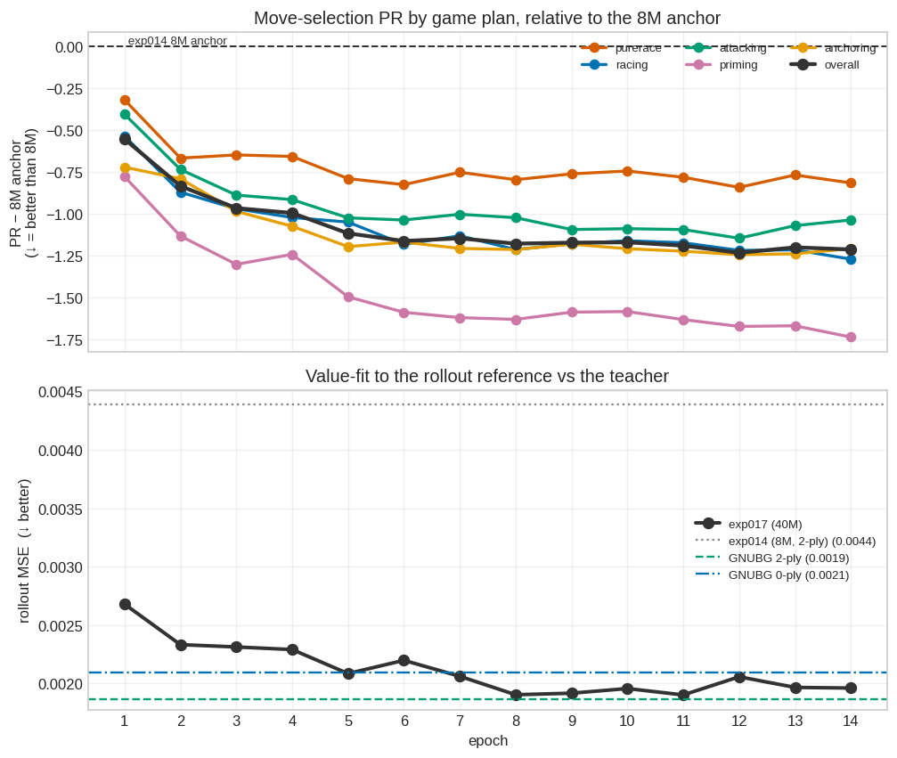
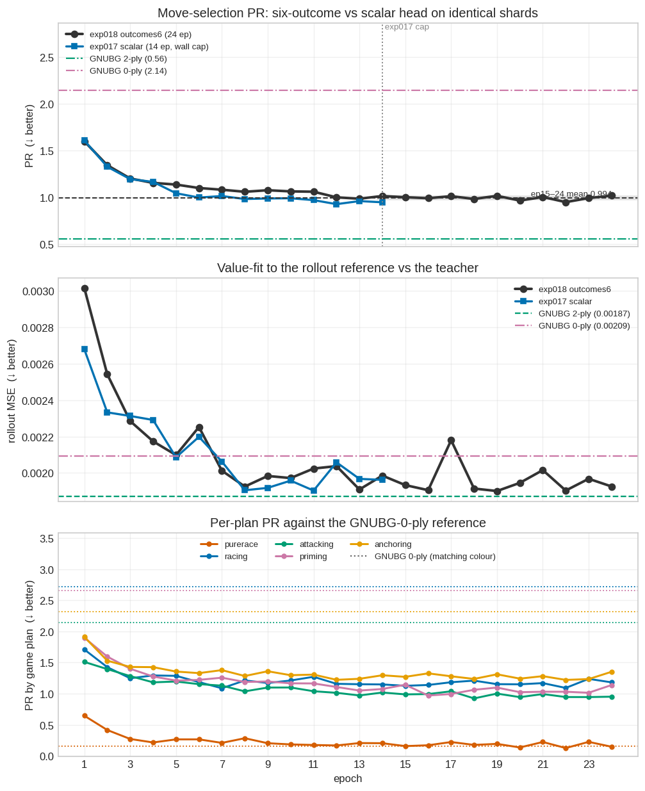

Raccoon Supervised & Expert-Iteration Analysis
Distilling GNUBG: pretraining v1–v5, on-distribution DAgger, and consolidation
This page documents the supervised & expert-iteration track — everything after the self-play track concluded that pure AlphaZero self-play plateaus hopelessly far from GNUBG at this project’s compute scale. The idea: instead of bootstrapping a network from noise, seed it from existing backgammon knowledge — first by regressing on labeled positions (stages v1–v5), then by keeping the GNUBG oracle in the training loop on the learner’s own positions (exp008, consolidation, exp009).
The arc in one paragraph: a calibrated value head alone is useless without a policy prior (v1); synthesised policy labels fix that mechanically (v2); distillation tops out at its teacher’s strength, so teacher quality is the lever (v2b); a GNUBG 4-ply teacher produces the project’s first wins against GNUBG (v3); capacity, eval-time search, and value-label coverage each fail to push past ~−1.6 ppg (v4, v5); the missing ingredient is on-distribution policy data, which live GNUBG labeling of the learner’s own positions supplies (exp008); retraining from scratch on all accumulated labels consolidates those gains (~−0.93 ppg); and scaling the loop (exp009) reaches ~−0.37 ppg before plateauing ~0.4 ppg short of parity — until 0-ply value distillation (exp011b) breaks that wall, reaching −0.05 vs 0-ply and −0.06 vs 2-ply, the current best. Each section below covers one experiment: motivation, setup, results, interpretation — results computed from the experiment logs at render time.
NoteCurrent best (2026-08-12)
exp018’s ep22 is the deliverable: 24 epochs of GNUBG-2-ply distillation over the full 40M corpus with the six-outcome value head, scoring PR 0.950 and rollout-MSE 0.00190 on the BGSage money benchmark (n=14,693 / n≈149k) — past GNUBG-0-ply on both (2.145 / 0.00209) and within 2% of the GNUBG-2-ply teacher’s MSE (0.00187). It is chosen over exp017’s scalar ep12 (PR 0.928) on capability, not strength: only the six-outcome head emits the win/gammon/backgammon split the cube needs. On checker play the scalar head is in fact slightly ahead — a paired +0.067 PR at their matched ep14 (CI [+0.009, +0.127]) — though the two tie on rollout MSE, and with one unseeded run per arm that gap cannot be attributed to the head rather than to initialisation.
Two caveats on that headline. It is a static-benchmark number, so it is not comparable to the ppg figures quoted for earlier nets (exp011b’s −0.053 ± 0.046 vs GNUBG-0-ply, n=6000, remains the best measured-in-play result); a raw-ppg confirmation at matched search is still outstanding. And 0.950 is a winner’s-curse pick — the ep15–24 plateau averages 0.994 (SD 0.023), so read the recipe’s true level as ≈0.99. Both training levers behind it are now spent or bounded: epochs are closed (exp018), and beyond that the gap to the teacher’s 0.56 is play-time search and label quality, not undertraining.
Summary: the strength ladder
The one metric that matters is standalone strength against GNUBG 2-ply (gnubg-nn at level=world — full-width 2-ply, “World class”; see the self-play page for eval conventions). Each bar is one experiment’s final checkpoint — or its best, where a run oscillated (exp009 shows its round-6 peak):
Two caveats on reading the ladder. Evaluation sim counts differ (100 for v1–v5, 50 for the later checkpoints, as labeled) — and more sims measurably hurts these networks (see v5), so the later bars are not flattered by the lower setting. And 100-game samples carry ±0.3–0.5 ppg of noise; the exp008 round_15 bar pools its original n=100 (−1.19) with a fair n=200 re-benchmark (−1.38).
The full eval record per checkpoint, pooled by opponent and sim count:
| checkpoint | opponent | sims | result | win% | ppg | n |
|---|---|---|---|---|---|---|
| v1 (value-only) | iter_0447 (self-play best) | 100 | 6-194 | 3% | -2.03 | 200 |
| v1 (value-only) | GNUBG 2-ply | 100 | 0-200 | 0% | -2.73 | 200 |
| v2 (0-ply self-teacher) | iter_0447 (self-play best) | 100 | 22-78 | 22% | -1.24 | 100 |
| v2 (0-ply self-teacher) | GNUBG 2-ply | 100 | 0-100 | 0% | -2.59 | 100 |
| v2b (iter_0447 teacher) | iter_0447 (self-play best) | 100 | 49-51 | 49% | -0.04 | 100 |
| v2b (iter_0447 teacher) | GNUBG 2-ply | 100 | 0-100 | 0% | -2.29 | 100 |
| v3 (GNUBG 4-ply teacher) | iter_0447 (self-play best) | 100 | 83-17 | 83% | +1.38 | 100 |
| v3 (GNUBG 4-ply teacher) | GNUBG 2-ply | 100 | 3-97 | 3% | -1.79 | 100 |
| v4 (10×256) | iter_0447 (self-play best) | 100 | 93-7 | 93% | +1.96 | 100 |
| v4 (10×256) | GNUBG 2-ply | 100 | 5-95 | 5% | -1.66 | 100 |
| v4 (10×256) | GNUBG 2-ply | 800 | 16-384 | 4% | -1.84 | 400 |
| v5 (10×256 +doubles) | iter_0447 (self-play best) | 100 | 93-7 | 93% | +1.98 | 100 |
| v5 (10×256 +doubles) | GNUBG 2-ply | 100 | 8-92 | 8% | -1.59 | 100 |
| v5 (10×256 +doubles) | GNUBG 2-ply | 800 | 4-96 | 4% | -1.88 | 100 |
| exp008 round_15 | v5 seed | 50 | 63-37 | 63% | +0.48 | 100 |
| exp008 round_15 | iter_0447 (self-play best) | 50 | 98-2 | 98% | +2.23 | 100 |
| exp008 round_15 | GNUBG 2-ply | 50 | 43-257 | 14% | -1.31 | 300 |
| exp008 round_15 | GNUBG 2-ply | 100 | 8-92 | 8% | -1.48 | 100 |
| consol 17ch | v5 seed | 50 | 186-64 | 74% | +0.96 | 250 |
| consol 17ch | exp008 round_15 | 50 | 122-78 | 61% | +0.45 | 200 |
| consol 17ch | GNUBG 2-ply | 50 | 48-152 | 24% | -0.93 | 200 |
| consol 26ch | v5 seed | 50 | 77-23 | 77% | +1.16 | 100 |
| consol 26ch | exp008 round_15 | 50 | 70-30 | 70% | +0.74 | 100 |
| consol 26ch | GNUBG 2-ply | 50 | 45-155 | 22% | -0.96 | 200 |
| exp009 round_06 (best) | consol 26ch seed | 50 | 74-26 | 74% | +0.81 | 100 |
| exp009 round_06 (best) | pretrained_v2 | 50 | 2-2 | 50% | +0.00 | 4 |
| exp009 round_06 (best) | GNUBG 2-ply | 50 | 83-117 | 42% | -0.37 | 200 |
Data and methodology
Four datasets feed the track — two external corpora, one generated in-house by GNUBG self-play, and one external benchmark used only for scoring:
| Source | Role | License | What it provides | Size |
|---|---|---|---|---|
| wildbg-training | training | CC0 | Pre-roll positions with rollout equities (win, win_g, win_bg, lose_g, lose_bg) — value labels only, no moves |
~300k positions |
| bglab match archive | training | personal match data | Human match positions (raw), and GNUBG 2-ply/4-ply analysis of those matches (analyzed/) |
~1777 raw matches → ~238k decisions; ~4319 analysed games → ~164k labeled decisions |
GNUBG self-play distillation (data/distill/) |
training | generated in-house | GNUBG self-play positions labeled by GNUBG itself — cubeless money equity plus the six-outcome distribution, at 0-ply and/or 2-ply |
40M positions at 2-ply, 16M at 0-ply |
BGSage money benchmark (data/bgsage/) |
evaluation only | sibling project | Sage self-play money games with adaptive-precision cubeless-equity references | 14,693 checker decisions → ~327k candidate positions |
The shared pipeline (raccoon/data/): decode positions into a perspective-relative board, encode with the same tensor encoder the self-play network uses (so any pretrained checkpoint is a drop-in --resume target), and replay matches move-by-move through OpenSpiel to recover the legal-action set at every decision. Move matching is robust to notation variants by falling back to a final-board-signature comparison — 99%+ replay success across both the raw and analysed corpora, with per-decision Position-ID verification against the analysed files (0 mismatches). bglab’s own equities are match-cubeful and are never used as targets; value targets come from wildbg rollouts, from a network, or from GNUBG money equities.
The distillation corpus (data/distill/; data/README.md has the full layout) is the dominant training source from exp011b onward, and the only one that scales: positions come from GNUBG self-play (scripts/gen_gnubg_selfplay.py), labels from re-querying GNUBG at a chosen ply (scripts/relabel_2ply.py). Shards are organised by label ply first, then by generation run — 2ply/{run1,run2,run3} totalling 40M positions (8M + 8M + 24M), 0ply/{run1,run2} totalling 16M. run1 is the matched pair: the same 8M positions labeled at both plies, which is what lets exp014 isolate the effect of teacher ply from the effect of which positions were sampled; run2 and run3 are independent samples whose shard filenames only align within a run, so they can’t be paired that way. run3 is 2-ply-only by design — its 0-ply twin was generated, relabeled, and deleted. Which slice each experiment consumed: exp011b 0ply/run1 (8M), exp014 0ply/run1 vs 2ply/run1 (8M each), exp017 all of 2ply/ (40M).
The BGSage benchmark (data/bgsage/money_benchmark/benchmark.json.gz) is scoring-only — nothing on this page trains on it. 500 Sage-3P self-play money games, 17,535 decisions of which 14,693 are checker decisions, each adjudicated at one of three reference tiers (rollout > 3-ply-team > 3-ply) by BGSage’s adaptive-precision scheme. Being external to every engine scored against it is what makes it usable as a primary metric rather than a proxy; the full scoring protocol and its caveats are in exp015.
Two further derived caches sit alongside the experiments that made them: the bglab 4-ply and policy caches (data/bglab/cache/, via scripts/synthesize_gnubg_dataset.py and synthesize_policy_dataset.py) behind v2–v5, and the on-distribution DAgger caches (experiments/<exp>/caches/) of learner-generated positions labeled live by GNUBG, behind exp008 and exp009.
Eval conventions match the self-play page: ppg under cubeless money scoring, arena matches at equal MCTS sims, GNUBG benchmark vs 2-ply. Where a benchmark was logged in chunks or replicated, tables on this page pool all rows for the same (checkpoint, opponent, sims). From exp015 onward the headline metric is instead the static BGSage score — PR over all 14,693 checker decisions, and value-head R²/MSE on the rollout tier (n≈149k) — which resolves near-parity comparisons that raw ppg cannot at any feasible n.
v1 — value-only pretraining
Motivation. The cheapest possible seed: regress the value head onto wildbg’s ~300k rollout equities and see how far a calibrated value function alone goes.
Setup. 20 epochs on the default 6×128 net (pretrain-wildbg-v1). The policy head receives no gradient and stays random.
Results.

Final val MSE: 0.0021The fit succeeds (val MSE ≈ 0.002 on a [−1, 1] target). The player does not: as a standalone engine it lost 6-194 (−2.03 ppg) to the best self-play checkpoint (iter_0447) and 0-200 (−2.725) to GNUBG — worse than iter_0447 itself against GNUBG.
Interpretation. A calibrated value head is not a player. With a uniform-ish policy prior, 100-sim MCTS spreads its budget over too many moves to find the lines the value head would reward. The policy prior is load-bearing; supplying one became the next step.
v2 — synthesised policy distillation
Motivation. wildbg has no move labels. Manufacture them: replay the bglab human matches, and at each decision do a 0-ply lookahead — static value evaluation of each candidate move, GNUBG’s convention (TD-Gammon calls it 1-ply) — with v1’s value head, one-hotting the best child as the policy target (~238k decisions).
Setup. Fine-tune both heads from v1 (pretrain-wildbg-v2): policy cross-entropy plus value distillation against the teacher’s own V(s), which keeps the value head calibrated while the trunk learns the dice channels (wildbg positions are all pre-roll).
Results.

A large improvement — vs iter_0447 it went from v1’s 3% wins to 22% (+0.79 ppg) — but still a clear loss (22-78, −1.24), and still 0-100 vs GNUBG (−2.59).
Interpretation. The mechanism works: synthesised policy labels produce a usable prior, confirming v1’s diagnosis. But the teacher — a 0-ply argmax under a GNUBG-weak value head — is itself weak, and the student cannot exceed it.
v2b — a stronger teacher
Motivation. If the teacher is the ceiling, raise the teacher: re-synthesise the same policy targets using the strongest value function available — exp005’s iter_0447 — for the 0-ply lookahead. Same matches, same pipeline, better labels.
Setup. As v2, with iter_0447 as both the lookahead value function and the value-distillation target (pretrain-wildbg-v2b).
Results.

By fitting metrics v2b looks worse than v2 — top-1 ~28% vs ~38%, value MSE ~2× higher. By strength it is far better: 49-51 vs iter_0447 (−0.04 ppg) — statistical parity with the best self-play net, in long balanced games rather than v2’s quick collapses. Vs GNUBG: 0-100, −2.29.
Interpretation. Two lessons. You cannot distill past your teacher — parity is exactly the expected ceiling when iter_0447 is the teacher — but you can compress it: v2b matches ~290 GPU-hours of self-play with ~21 CPU-hours of supervised training. And fitting metrics across different teachers are incomparable: 28% agreement with a strong teacher beats 38% agreement with a weak one. Strikingly, MCTS at eval time recovers full strength from a prior that agrees with its own labels only ~28% of the time — search only needs the prior to be directionally right.
v3 — a GNUBG 4-ply teacher
Motivation. The way past iter_0447’s level is a teacher stronger than any network we own. The bglab archive ships one: GNUBG 4-ply analysis of the same matches — world-class labels, for free.
Setup. Read GNUBG’s labels directly off the analysed files at every non-doubles decision (pretrain-gnubg-v3): a soft policy target softmax(money_equities / T) over GNUBG’s candidate moves (near-ties taught as near-ties), and a money-equity value target — never GNUBG’s match-cubeful equity. ~139k positions. Doubles decisions (~18%) are dropped: OpenSpiel splits a doubles play into two decision nodes while GNUBG scores the whole move, so the first-half action is ambiguous. Same 6×128 net, warm from v1.
Results.

Decisive on both fronts. v3 crushes iter_0447: 83-17, +1.38 ppg — with 42 gammons and 20 backgammons won — the first checkpoint in the project to beat it. And v3 wins the project’s first games against GNUBG: 3-97, −1.79 ppg — every prior checkpoint, self-play or supervised, had gone 0-for-all. GNUBG’s backgammon count against us collapsed (64 → 17 per 100 games).
Interpretation. The teacher-quality thesis confirmed at scale: no new search, no bigger net, no self-play — only better labels, and the ceiling lifts above every player the project had produced. This was the first hard evidence the GNUBG gap is closable by supervised means. Top-1 agreement is still only ~28%: the student captures a fraction of its 4-ply teacher, which relocates the binding constraint from the teacher to the student.
v4 — capacity
Motivation. With the teacher fixed at world class, the student’s shortfall has two candidate axes: capacity and coverage. v4 isolates capacity — same teacher, same ~139k cache, network scaled 6×128 → 10×256 (2.5M → 11.9M parameters).
Setup. Single-stage training from random init on the GNUBG cache (pretrain-gnubg-v4-10x256) — the cache carries value targets, so v1’s warm-start is no longer needed. 10 epochs, ~5.6 h on the iMac CPU.
Results.

The bigger net fits the teacher better (top-1 28 → 31%, value MSE 0.0075 → 0.0066) and converts it fully against the internal bar: 93-7 vs iter_0447, +1.96 ppg (zero backgammons conceded). Against GNUBG: 5-95, −1.66 ppg — vs v3’s 3-97, −1.79. That +0.13 ppg is inside the ±0.43 95% CI: statistically no change.
Interpretation. The split is the finding: capacity converts to strength against opponents near the training distribution, and does nothing against GNUBG steering the game into positions the human-match archive doesn’t cover. That is the signature of a coverage/generalisation gap, not a parameter-count gap.
v5 — doubles value coverage, and the limits of search
Motivation. Attack the most concrete coverage hole: the ~18% of decisions dropped as doubles. Their policy is ambiguous under OpenSpiel’s move-splitting, but their value is not — the best candidate’s money equity stands regardless of how the move is split.
Setup. Re-synthesise the cache with each doubles decision as a value-only example (policy masked out): +25k examples, cache 139k → 164k (pretrain-gnubg-v5-10x256-dbl). Same 10×256 single-stage recipe, 20 epochs.
Results. Fit improves on both heads (top-1 33.0%, value MSE 0.0061 — now including the doubles). Strength: 93-7 vs iter_0447 (+1.98) — dead level with v4 — and 8-92, −1.59 ppg vs GNUBG, the best external number of the pretraining stages but within noise of v4’s −1.66. What did shift is the loss profile: GNUBG’s gammons against us fell 55 → 37.
Two follow-up measurements defined the next experiment:
- More search hurts. At 800 sims instead of 100, v4 scores −1.84 (n=400) and v5 −1.88 (n=100) — both worse than at 100 sims. Deeper MCTS lets miscalibrated value backups override the distilled GNUBG policy prior more aggressively, walking further into unfamiliar territory instead of out of it.
- The per-decision error profile (
scripts/error_profile.py, scoring every v5 decision in the 800-sim game log against a GNUBG 0-ply oracle):
side bucket decisions mean loss loss/game share
raccoon total 2675 0.0811 2.170 100%
raccoon non-doubles 1971 0.0669 1.319 61%
raccoon doubles 704 0.1208 0.850 39%
gnubg total 3330 0.0051 0.171 (baseline)Doubles are ~1.8× worse per decision — the policy head’s structural blindness is real — but non-doubles are the larger absolute leak (61% of equity lost). Even a perfect doubles fix leaves ~1.3 ppg on the table.
Interpretation. The third student-side lever in a row moves the external gap by less than noise: after capacity (v4), eval-time search (v4@800), and value-coverage (v5), the gap sits at ~−1.6 ppg no matter what. The diagnosis sharpens: more value labels of the same kind can’t teach move selection on the lines GNUBG forces, and the human-match archive structurally does not contain those lines. What’s missing is on-distribution policy data — and the error profile adds that the value head misleads search even off-doubles, so both targets need fixing. A fixed archive cannot supply either; a live oracle can.
Encoder feature ablation — do handcrafted inputs earn their place?
Motivation. The encoder carries nine handcrafted broadcast channels (pip counts, blots, anchors, contact) added wholesale in commit 23463f0 and never tested. They are deterministic functions of the board — a large net could re-derive them — so their value, if any, is an inductive-bias shortcut in data-limited regimes. Are they helping or hurting?
Setup. Paired ablation in a deliberately small regime: 50k wildbg positions, 15 epochs, 6×128, two seeds per condition (same seed ⇒ same split). Yardstick: held-out value MSE, split into wildbg’s race vs contact files — pip count should help races most. Value-only training, so no play-strength numbers (v1’s lesson: they’d be meaningless).
Results.

The features were silently mis-scaled. The base planes live in [0, 1] by construction; the handcrafted channels were emitted raw — pip count ~95–230, roughly 100× larger. Adding raw pip count alone raised val MSE by ~88% (0.0058 vs 0.0031): the input convolution reads every channel through one weight scale, so the giant channels dominate the gradient. A live regression, hiding since the commit that added the features.

feature raw Fix-N (norm) Fix-B (inbn)
-----------------------------------------------------------------------------
base 0.0031 (0.0038/0.0028) 0.0031 (0.0038/0.0028) 0.0034 (0.0034/0.0034)
pip 0.0058 (0.0040/0.0068) 0.0029 (0.0021/0.0032) 0.0028 (0.0021/0.0031)
blots - 0.0027 (0.0028/0.0027) 0.0031 (0.0036/0.0029)
anchors - 0.0029 (0.0029/0.0030) 0.0032 (0.0031/0.0032)
contact - 0.0027 (0.0026/0.0028) 0.0030 (0.0032/0.0029)
all - 0.0022 (0.0018/0.0024) 0.0026 (0.0023/0.0027)
cells: overall (race / contact); 2-seed mean of each run's best epochBoth candidate fixes repair the blowup: Fix-N (divide each channel by a fixed constant in the encoder) and Fix-B (a BatchNorm over the raw input). Fix-N wins on every feature group, and Fix-B slightly hurts the already-normalised base — standardising clean channels just injects per-batch noise. Once scaled, the full 26-channel encoder reaches val MSE 0.0022 vs base 0.0031 (−29%, and −53% on races, exactly where a pip count should help) and hits base’s floor in 4 epochs instead of 15. No single feature group is decisively justified on its own (individual gaps sit inside the seed-to-seed spread); the robust effects are the full set and the race-side gain.
Interpretation. Input scaling is load-bearing: any new channel must enter at the base planes’ scale. Fix-N became the encoder default (commit c493714), and the normalised 26-channel encoder became one arm of the consolidation A/B. The caveat is built into the design — this measures a small-data inductive bias; at full data a big net may simply re-derive the features (the consolidation tests exactly that).
exp008 — on-distribution DAgger
Motivation. Two results pinned down the design. The archive stages topped out at ~−1.6 ppg with on-distribution policy as the diagnosed gap (v5); and exp007 showed pure self-play from the v5 seed erases it. Expert iteration threads the needle: generate positions with the current net’s own play (fixing the distribution gap), but label them with a fixed strong oracle (fixing the signal-quality trap). The installed gnubg-nn engine — the benchmark opponent itself — can label arbitrary positions programmatically.
Setup. 15 DAgger rounds, warm-started from v5 (10×256, 17-channel encoder). Each round: the current net plays temperature-sampled games; every visited position is labeled live by GNUBG at 2-ply (soft policy over candidates + money-equity value; ~30–48k labels/round, capped at 10 h); the round cache is merged with the 4-ply archive plus the last 4 rounds’ caches; fine-tune 4 epochs at lr 3×10⁻⁴; evaluate. Pure supervised distillation throughout — no MCTS targets, no terminal outcomes — so neither exp007 failure mode can recur by construction. Hands-off on the iMac CPU, 2026-06-27 → 07-06.
The on-dist data is a genuinely different distribution where it matters: v5’s error against the generated labels is far higher than against the archive (value MSE 0.016 vs 0.006; top-1 25% vs 49%), and the generated positions are heavier in hitting sequences (on-bar 46% vs 29%) and doubles (27% vs 15%) — the regions the error profile flagged.
Results.
| round | vs v5 seed | vs iter_0447 | vs GNUBG 2-ply |
|---|---|---|---|
| 1 | 55-45 +0.16 | ||
| 2 | 53-47 +0.14 | ||
| 3 | 57-43 +0.29 | ||
| 4 | 57-43 +0.37 | 95-5 +2.07 | 7-93 -1.65 |
| 5 | 55-45 +0.22 | ||
| 6 | 54-46 +0.11 | ||
| 7 | 56-44 +0.36 | ||
| 8 | 55-45 +0.11 | 96-4 +2.24 | 9-91 -1.42 |
| 9 | 59-41 +0.40 | ||
| 10 | 55-45 +0.26 | ||
| 11 | 54-46 +0.20 | ||
| 12 | 65-35 +0.60 | 95-5 +2.06 | 10-90 -1.55 |
| 13 | 60-40 +0.48 | ||
| 14 | 57-43 +0.23 | ||
| 15 | 63-37 +0.48 | 98-2 +2.23 | 17-83 -1.19 |
(100 games per cell, 50 eval sims; GNUBG benchmarked every 4th round)
Three verdicts, in order of importance:
- The regression trap is gone. Where exp007 fell to 10-90 against the v5 seed in 50 self-play iterations, exp008 climbs — to 63-37 (+0.48 ppg) by round 15. Pooling the last four rounds: 245/400 vs the seed, z ≈ 4.5 — unambiguous improvement over the strongest supervised checkpoint, the first method to achieve that.
- The external gap narrowed: 7% → 17% wins, −1.65 → −1.19 ppg between rounds 4 and 15 (two-proportion p ≈ 0.03). (The fair n=200 re-benchmark of round_15, run later, puts it at −1.38 — see the consolidation below.)
- iter_0447 is now beaten 98-2 (+2.23), up from the seed’s 93-7.
A same-conditions re-check at 100 sims confirms the ordering (v5 −1.72, round_15 −1.48, n=100 each) — and reproduces the “more sims hurt” pattern from v5: both nets score worse at 100 sims than at 50, so value-head calibration under search remains the standout bottleneck.
Infrastructure aside: the run surfaced a 10× CPU-training slowdown — weights drifting into subnormal floats, hitting the FPU slow path. torch.set_flush_denormal(True) fixed it (measured 10.24× on the degraded weights) and retroactively explains exp007’s mysterious SGD slowdown; together with OMP_WAIT_POLICY=PASSIVE (idle OpenMP threads otherwise busy-spin under desktop contention) it is now standard for CPU training.
Interpretation. The diagnosis from v5 was correct and the fix works: on-distribution states plus a fixed strong expert for both targets improves on the seed where self-play destroyed it. The return is modest per round (~0.4–0.5 ppg over 15 rounds / ~200 CPU-hours), and the loop’s ceiling is its teacher — GNUBG 2-ply — by construction. Both facts shaped what came next: consolidate the accumulated labels properly, then scale the loop.
Phase A consolidation — retrain from scratch on everything
Motivation. exp008 left two loose ends. Its checkpoint was the product of 15 successive warm fine-tunes over shifting data mixes — was strength left on the table versus simply retraining from scratch on all accumulated labels? And the feature ablation validated a normalised 26-channel encoder at small scale but the production lineage was still 17-channel — the retrain is the natural A/B point. Both questions gate the seed choice for exp009.
Setup. (experiments/pipeline_consolidate.sh, 2026-07-08 → 07-10.) Merge the 4-ply archive (164k) with all 15 exp008 on-dist round caches (~680k) into one ~844k-example cache; re-encode a copy losslessly to 26 channels. Train a fresh random-init 10×256 on each cache (12 epochs, lr 10⁻³, best-val-epoch checkpoint selection). Evaluate each arm vs the v5 seed, vs exp008 round_15 (the incumbent), and vs GNUBG 2-ply (4×50 games) — plus a fair n=200 GNUBG re-benchmark of round_15 itself, all at 50 sims.
Results.
| checkpoint | opponent | sims | result | win% | ppg | n |
|---|---|---|---|---|---|---|
| consol 17ch | v5 seed | 50 | 186-64 | 74% | +0.96 | 250 |
| consol 17ch | exp008 round_15 | 50 | 122-78 | 61% | +0.45 | 200 |
| consol 17ch | GNUBG 2-ply | 50 | 48-152 | 24% | -0.93 | 200 |
| consol 26ch | v5 seed | 50 | 77-23 | 77% | +1.16 | 100 |
| consol 26ch | exp008 round_15 | 50 | 70-30 | 70% | +0.74 | 100 |
| consol 26ch | GNUBG 2-ply | 50 | 45-155 | 22% | -0.96 | 200 |
| exp009 round_06 (best) | consol 26ch seed | 50 | 74-26 | 74% | +0.81 | 100 |
| exp009 round_06 (best) | pretrained_v2 | 50 | 2-2 | 50% | +0.00 | 4 |
| exp009 round_06 (best) | GNUBG 2-ply | 50 | 83-117 | 42% | -0.37 | 200 |
| exp008 round_15 (fair re-benchmark) | GNUBG 2-ply | 50 | 26-174 | 13% | -1.38 | 200 |
Both arms beat everything before them: the 17ch arm reaches −0.93 ppg (24% wins, n=200) against GNUBG 2-ply and the 26ch arm −0.96 (22%) — statistically indistinguishable from each other, and a large step past the incumbent. Both beat round_15 head-to-head (+0.45 and +0.74 ppg pooled). Meanwhile round_15’s own fair n=200 benchmark lands at −1.38, well below its documented −1.19: the n=100 number was an optimistic draw (±0.5-ppg-wide CIs make that routine).
The run also priced deeper teachers for future rounds (scripts/bench_gnubg_ply.py, 30 positions):
| GNUBG ply | s/decision | labels/h/core | vs 2-ply |
|---|---|---|---|
| 0 | 0.003 | ~1.4M | — |
| 2 | 0.305 | ~11.8k | 1× |
| 3 | 16.2 | ~220 | 53× |
| 4 | 262 | ~14 | 861× |
Interpretation. Three conclusions. Consolidated retraining beats incremental fine-tuning by ~+0.4 ppg on the identical label pool — the DAgger loop’s warm fine-tunes had accumulated real sub-optimality (recency-window mixes, per-round overfitting). Measure at n≥200: the −1.19 → −1.38 correction is a standing reminder that 100-game GNUBG evals carry ±0.5 ppg. And the handcrafted features appeared to wash out at scale — at 844k labels the 26ch arm showed no edge over 17ch on this n=200 GNUBG match (consistent with the ablation’s small-data framing); the 26ch arm was nonetheless adopted as the exp009 seed for encoder consistency going forward (it also beat the incumbent by more head-to-head, +0.74 vs +0.45, though that difference is itself within noise). (Update: this n=200 read was underpowered, not a null result — exp016 re-scores these same two checkpoints on the high-power BGSage benchmark and finds a clear, significant edge for the 26ch arm on both PR and rollout MSE.)
exp009 — scaled DAgger
Motivation. exp008 showed on-distribution DAgger works but returns only ~0.4–0.5 ppg over 15 slow rounds, and the consolidation showed the accumulated labels held more than the incremental fine-tunes had extracted. exp009 restarts the loop from the consolidation 26ch arm to push the gains further and stress-test the method at scale, with four upgrades from the exp008 post-mortem.
Setup. (experiments/pipeline_exp009.sh, 2026-07-10 → 07-21, GCP T4 VM.) 25 DAgger rounds warm-started from the consolidation 26ch seed, GNUBG 2-ply teacher, 50 eval sims. The upgrades: parallel label synthesis (14 worker processes shard each round — the ~10 h synth cap drops to ~4 h even at a 2× larger budget), doubles policy labels (the half-move labels candidate_equities already computes were discarded in exp008; the error profile priced that leak at ~0.85 ppg/game — now ~26% of each round’s labels carry policy targets, none discarded), best-val-epoch selection (every exp008 round overfit past epoch 1), and a 2× round budget (120k labels/round). GNUBG benchmarked every 2nd round (n=100), milestone n=200 at rounds 6/18/25.
Results.
| round | vs seed (arena) | vs GNUBG 2-ply | n (GNUBG) |
|---|---|---|---|
| 1 | 62-38 +0.49 | ||
| 2 | 51-49 +0.14 | 28-72 -0.69 | 100 |
| 3 | 64-36 +0.51 | ||
| 4 | 70-30 +0.60 | 30-70 -0.62 | 100 |
| 5 | 63-37 +0.48 | ||
| 6 | 76-28 +0.78 | 83-117 -0.37 | 200 |
| 7 | |||
| 8 | 71-29 +0.78 | 36-64 -0.52 | 100 |
| 9 | 72-28 +0.72 | ||
| 10 | 70-30 +0.59 | 33-67 -0.65 | 100 |
| 11 | 57-43 +0.24 | ||
| 12 | |||
| 13 | 67-33 +0.52 | ||
| 14 | 63-37 +0.49 | 25-75 -0.81 | 100 |
| 15 | 67-33 +0.51 | ||
| 16 | |||
| 17 | 64-36 +0.44 | ||
| 18 | 70-30 +0.61 | 70-130 -0.50 | 200 |
| 19 | 67-33 +0.55 | ||
| 20 | 64-36 +0.45 | 31-69 -0.66 | 100 |
| 21 | 66-34 +0.51 | ||
| 22 | 70-30 +0.70 | 36-64 -0.51 | 100 |
| 23 | 71-29 +0.59 | ||
| 24 | |||
| 25 | 162-38 +1.49 | 70-130 -0.48 | 200 |
(arena = 100 games vs the frozen consolidation 26ch seed; GNUBG every 2nd round, n=100, milestone n=200 at rounds 6/18/25; 50 eval sims. Blank cells are evals skipped when a VM preemption resumed past a completed round.)

Three readings:
- A large early gain, then a plateau. The gap to GNUBG halves in six rounds — −0.96 (seed) → −0.37 (round 6, n=200), 41% wins — the project best, ~60% of the remaining gap to parity closed. But no later round beats it: rounds 8–25 oscillate in a −0.5 to −0.8 band, and the other two n=200 milestones (round 18 −0.50, round 25 −0.48) sit within ~1 SE of round 6. The doubles-policy fix plus the bigger budget bought the early jump; the loop then stopped compounding.
- The head-to-head keeps climbing even as the external gap doesn’t. Against the frozen seed the arena rises to +0.5–0.9 ppg by the late rounds — the net keeps beating its own history at 50 sims while its standing against GNUBG bounces. “Beats its predecessor” and “closes the external gap” are different claims.
- iter_0447 is buried 99-1 (+2.41 ppg) by the final round — the strongest self-play checkpoint now loses essentially every game.
Ops aside. The run spanned 11 days on a preemptible VM in a capacity-crunched zone — ~9 preemptions, all auto-recovered by a local watchdog, plus a spot-price spike that put the Phase A+B bill at ~kr.880 (~$128), 2–4× the estimate, most of it spent on the post-round-6 plateau. That motivated per-round cost projection + clean round-boundary budget/plateau stopping (scripts/pipeline_budget.py) for future runs.
Interpretation. Scaling the loop confirmed the method and set a new best, but exposed its shape: DAgger with a warm-started, ungated loop makes its biggest correction early (here, the doubles-policy fix), then oscillates around a plateau rather than converging monotonically — nothing gates a round on improving, so the checkpoint advances even through regressions and the best (round 6) is a peak the run wandered away from. Two lessons carry forward: gate on eval (keep-best, not last) and the consolidation’s measure at n≥200 (the n=100 rounds are individually too noisy to rank). The plateau ~0.4 ppg short of parity, teacher fixed at 2-ply, is the teacher-ceiling signal that motivates exp010’s TD self-play.
exp011b — 0-ply value distillation
Motivation. Two independent methods had stalled at the same place: exp009 DAgger (−0.37 vs GNUBG-2-ply) and exp010 TD self-play both plateaued ~0.3 ppg short of even 0-ply, and exp010 exposed why — the distilled nets predict equity well enough for MCTS but play 0-ply badly (their value isn’t accurate at the margin between sibling moves). Is that plateau volume/fidelity-bound — the net can represent GNUBG’s value but was never given enough clean labels — or capacity-bound, a limit of the 10×256 architecture? Cloning GNUBG-0-ply’s value at a volume DAgger never reached separates the two.
Setup. GNUBG plays itself at 0-ply — greedy, since the dice already fan out coverage — and every pre-roll position is recorded with GNUBG’s 0-ply outcome probabilities (scripts/gen_gnubg_selfplay.py); play is the label, so generation is net-free and cheap (~8M positions in ~7 h). Value-only (the value head is the whole player: 0-ply move selection, no policy head), a confound-free two-arm A/B from random init on the identical positions (scripts/train_distill.py): a scalar head (MSE against equity) vs a six-outcome softmax head (win/gammon/bg × win/lose — the multi-component target GNUBG and TD-Gammon use). Both arms trained the full 3 epochs on a T4, keeping a per-epoch ep{N}.pt checkpoint and selecting the winner offline at n=1000. (A first attempt — “exp011” — hit a 15 h iMac-CPU wall mid-first-epoch and was re-run to completion here. Artifacts: experiments/exp011b-distill/, benchmarked in experiments/exp012b-benchmark/.)
Results. Both arms (epoch 3) benchmarked against GNUBG at 0- and 2-ply:
| net (ep3) | vs GNUBG-0-ply (n=6000) | vs GNUBG-2-ply (n=1000) |
|---|---|---|
| six-outcome | −0.053 ± 0.046 | −0.064 ± 0.11 |
| scalar | −0.050 ± 0.046 | −0.133 ± 0.11 |
The two value heads are tied — cleanly at 0-ply (−0.050 vs −0.053, well inside ±0.046). At 2-ply the n=1000 estimates are too noisy (±0.11 each) to separate them: the −0.064 vs −0.133 gap sits inside the combined CI, not a real difference. (The six-outcome head was the marginally-selected winner; its n=1000 selection “+0.001” was winner’s-curse-inflated — honest 0-ply value −0.053.)
Interpretation.
- Near 0-ply parity — volume-bound, not capacity-bound. −0.053 clears the ~−0.3 wall that held across exp009 and exp010 decisively: the 10×256 architecture can represent GNUBG’s value; it just needed clean labels at volume. But it lands ~0.05 short of parity (the n=6000 CI [−0.099, −0.007] excludes zero), and pure 0-ply distillation cannot go past its teacher (you cannot distill past your teacher). The residual is value precision at the margin between sibling moves, not missing coverage — the greedy generator’s dice already fan out the position space.
- The two heads tie — neither target distils better. So the six-outcome head is preferred downstream for the win/gammon/bg distribution it carries (needed for the cube), not because it plays stronger — measurably, it doesn’t. (This is the clean A/B the truncated first attempt couldn’t give.)
- 2-ply search buys GNUBG little here. The 2-ply gap (−0.064) is only ~0.01 worse than the 0-ply gap (−0.053): at static 0-ply play this net is nearly as close to GNUBG-2-ply as to 0-ply.
What’s next. Going past the 0-ply teacher needs a signal stronger than 0-ply. TD self-play from this near-parity seed (exp013) has since been run: greedy TD showed no detectable movement over 39 batches, but the test wasn’t powered for the realistic ~0.05 ppg effect size — so exp010’s ~−0.3 attractor is ruled out (this seed never fell toward it) without the climb-vs-flat question being fully closed. Two levers remain: temperature>0 TD (untested exploration) and 2-ply distillation — run next as exp014.
exp014 — does a 2-ply teacher fit as well as the 0-ply teacher?
Motivation. exp011b’s 0-ply-distilled net lands ~0.05 ppg short of GNUBG-0-ply parity and, by construction, 0-ply distillation cannot exceed its own teacher. The obvious lever is a stronger teacher: re-label the identical positions at GNUBG-2-ply (cache already generated and format-validated, 2-ply label generation) and distil that instead.
Why fit quality, not ppg. The realistic 2-ply-over-0-ply margin is small: the same net measured −0.053 vs 0-ply and −0.064 vs 2-ply (exp011b) — only ~0.011 ppg apart — and the 2-ply vs 0-ply labels on identical positions differ by just ~0.017 ppg mean-absolute. (That −0.053 figure is itself a solid, well-powered result — one checkpoint vs. a fixed external reference at n=6000, CI ±0.046, excluding zero. What’s not well-powered at feasible n is a paired comparison — resolving a difference this size between two checkpoints, which needs combining two independent SEs. exp013 already showed that: n=6000 resolves such a paired δ≥0.05 at only ~33% power, and even n=24000 is marginal at the low end of this range.) That paired comparison is exactly what an 0-ply-vs-2-ply ppg test would be, so the primary metric here is deliberately a proxy, not raw play: can the scalar net fit 2-ply labels about as well as it fits 0-ply labels? GNUBG-2-ply being the stronger player is an external fact, not something this experiment measures — fitting it equally faithfully would indicate the 2-ply-distilled net is at least as strong, i.e. this proxy targets the sign of the effect, not its ppg magnitude. This is a deliberate, reasoned exception to the “primary metric must be unbiased raw play” convention, made explicit for that reason.
Setup. Same recipe as exp011b’s scalar arm (10×256, 3 epochs, lr=1e-3, batch 512, scripts/train_distill.py), trained twice from random init — once on cache/ (0-ply labels), once on cache_2ply/ (2-ply labels) — rather than warm-started, so the A/B stays confound-free exactly like exp011b’s own two-arm design. Both caches hold the same 8M self-play positions with byte-identical observations (verified), only the label ply differs. A fixed, seeded 25% holdout (raccoon.data.cache_split.held_out_mask, seed 14) is applied identically to both arms, so both train on the same 6M positions and are scored on the same held-out 2M.
Primary metric (fixed up front): each net’s held-out R² against the labels it was actually trained on, n≈2M, at ep3 — the epoch exp011b selected.
Results. Held-out/train R² against each net’s own training labels, ep3:
| net (ep3) | target labels | held-out R² (n≈2M) | train R² (n=200k) |
|---|---|---|---|
| 0-ply-trained | 0-ply | 0.9983 | 0.9984 |
| 2-ply-trained | 2-ply | 0.9983 | 0.9984 |
Target-swap (held-out rows, scored against the other arm’s labels):
| net (ep3) | target labels | held-out R² |
|---|---|---|
| 0-ply-trained | 2-ply | 0.9979 |
| 2-ply-trained | 0-ply | 0.9981 |
Supporting per-epoch curve (held-out R² against each net’s own training labels, subsampled to 200k rows for speed — not the headline):
| epoch | 0-ply arm | 2-ply arm |
|---|---|---|
| 1 | 0.9933 | 0.9942 |
| 2 | 0.9956 | 0.9981 |
| 3 | 0.9984 | 0.9983 |
Held-out R² against each net’s own training labels is tied to 4 decimal places (0.9983 vs 0.9983); both improve monotonically and both select ep3. Train vs. held-out R² are equal for both arms (0.9984 vs 0.9983) — no detectable gap. Each net generalizes slightly less well to the other arm’s target labels than to its own (0.9979, 0.9981 vs. 0.9983 against its own labels) — the expected direction, confirming both nets learned label-set-specific structure rather than a generic fit.
Methodology check: train/holdout leakage. The holdout is a per-position coin flip, not per-game (held_out_mask), so no game is cleanly on one side: checked directly in one 500k-row shard, all 9,014 detected games have positions on both sides. This is not necessarily invalid — backgammon positions are Markovian, so a smooth value function generalizing to a same-game neighbor is legitimate, the same as generalizing to a similar position from a different game. A sharper case is exact duplicate positions: ~8% of held-out rows in that shard have a byte-identical twin in training (dominated by the fixed starting position, which recurs thousands of times). Checked directly whether this inflates R²: it does not — the duplicate subset actually scores lower (R²=0.9972) than the genuinely-novel subset (R²=0.9984), because it’s concentrated in a low-variance, early-game slice of the target distribution (equity std 0.13 vs. 0.31); in absolute-error terms the model is if anything more accurate there (implied RMSE 0.007 vs. 0.012). Whatever residual leakage remains applies identically to both arms (same games, same split), so it cannot bias the paired 0-ply-vs-2-ply comparison above — it only tempers any absolute “the net generalizes well” claim.
Supporting sanity check (guards against a silently-broken net, not part of the hypothesis; scripts/eval_gnubg0.py, scripts/eval_netarena.py):
- 2-ply-trained net vs GNUBG-0-ply, raw ppg, n=3000: −0.0193 (95% CI ±0.064)
- 2-ply-trained net vs 0-ply-trained net, head-to-head raw ppg, n=3000: +0.0290 (2-ply’s POV; 95% CI ±0.064)
Both intervals comfortably include zero — n=3000 isn’t powered for the ~0.05-scale effect discussed above, so neither result is a significant confirmation. But neither is a red flag either: both point estimates land in the expected direction (near-parity vs. GNUBG-0-ply; a small edge over the 0-ply-trained net head-to-head), and the net plays sensibly, not broken.
Conclusion. Can the scalar net fit 2-ply labels about as well as 0-ply labels? → Yes: the 2-ply-trained net’s held-out R² against 2-ply labels (0.9983, n≈2M) equals the 0-ply-trained net’s held-out R² against 0-ply labels (0.9983, n≈2M), tied to 4 decimals — and the raw-ppg sanity checks (n=3000 each, underpowered but consistent) show no sign this is a broken or weaker net. Since GNUBG-2-ply is externally known to be the stronger player, this supports — but does not size — the 2-ply-distilled net being at least as strong as the 0-ply-distilled one.
What’s next. Train the deliverable 2-ply net on the full 8M (no holdout) for maximum strength, to seed downstream work past whatever ceiling the 0-ply-distilled net had.
exp015 — static PR benchmark against BGSage
Motivation. exp014’s held-out R² result (0.9983 vs 0.9983) shows the 2-ply-distilled net fits its teacher as well as the 0-ply-distilled net fits its own — evidence for the sign of a strength difference, not its size, and explicitly not a raw-play confirmation. Resolving that difference with raw ppg needs a paired comparison between the two checkpoints, and exp013 already measured that kind of test at only ~33% power for a δ≈0.05 effect at n=6000 (n=24000 is marginal even at the low end). A static, per-decision benchmark against an external, high-precision reference sidesteps that noise floor entirely — the same reason human players and commercial bots (XG, GNUBG) report skill as a per-decision Performance Rating (PR) rather than raw match results. The BGSage money-game benchmark (500 Sage-3P vs Sage-3P self-play games, analysed by Sage at adaptive precision; a sibling repo, not part of this project) gives exactly that: a fixed, noise-free position set with a reference stronger than any engine under test.
Why PR, not raw ppg, as the primary metric. This is a deliberate exception to the “primary metric must be raw play” convention, made explicit for that reason (mirroring exp014’s R² exception). It differs from the project’s previously-dropped “error-rate ppg” proxy: that one converted a per-decision error rate into a ppg estimate using a self-referential control variate (the evaluated net’s own pre-roll value against its own 1-ply lookahead), and that self-consistency failure is what made it biased. Here the reference (Sage rollout / 3-ply-team / 3-ply) is wholly external to every engine being scored and PR is reported in its own native units — no ppg conversion is attempted. The trade-off: PR measures move-selection skill on a fixed position set, not outcomes of complete games, so it is a proxy for playing strength, not playing strength itself; it is used here precisely because it is unbiased and far lower-variance than raw ppg for this comparison, not as a replacement for the raw-ppg standard elsewhere on this page.
Setup. scripts/eval_benchmark_pr.py scores each engine on every checker decision in the benchmark: encode all candidate moves from the opponent’s (next-to-move) perspective, take the engine’s argmax, and score error = max(0, best_cubeless_eq − chosen_cubeless_eq) against Sage’s cubeless_equity reference (never Sage’s cubeful equity, which would penalize cubeless engines for a cube they don’t carry). PR = mean(error) × 500, GNUBG’s convention. Cube decisions are skipped (all engines here are cubeless). Four engines: GNUBG 0-ply and 2-ply (via gnubg-nn), and the two existing distilled checkpoints from this page — exp011b’s outcomes6/ep3 (the head kept downstream per exp011b) and exp014’s scalar_2ply/ep3 (the confound-free A/B arm, not the still-untrained full-8M deliverable exp014 flagged as its own next step — that remains open). The benchmark corpus: 500 games, 17,535 total decisions (14,693 checker + 2,842 cube); BGSage’s adaptive-precision scheme assigns each of the corpus’s 16,889 non-trivial decisions a reference tier — rollout (5,977), 3-ply-team/3T (3,260), or 3-ply/3P (7,652) — costlier tiers going to closer, more contested decisions. (That corpus-wide tally covers checker + cube decisions together; the R² breakdown below reports checker-only candidate positions by tier, a different, larger denominator — see the counts in that table.)
(Correction, 2026-07-31: the original run behind this section actually scored best.pt for both distilled checkpoints, not ep3.pt as the paragraph above always intended — best.pt is an artifact of train_distill.py‘s noisy in-loop n=40-game selector (for the outcomes6 arm it happened to freeze at essentially the ep1.pt state and never update), not the properly cross-validated checkpoint that exp011b and exp012b actually select and every other section on this page reports against. Caught while exp016 was re-deriving these same checkpoints’ numbers from scratch and couldn’t reproduce this section’s PR/MSE at all; confirmed by reproducing the original numbers exactly off best.pt on a subsample. The numbers below are now the correct ep3.pt re-run, saved with --output this time so the raw per-decision JSON is reproducible going forward — see experiments/exp015-benchmark/results/.)
Results. Move selection, PR = mean(error) × 500 over all 14,693 checker decisions (lower is better), plus a per-game-plan breakdown:
| Engine | PR | n | Blunders | purerace | racing | attacking | priming | anchoring |
|---|---|---|---|---|---|---|---|---|
| GNUBG 2-ply | 0.56 | 14,693 | 11 | 0.05 | 0.80 | 0.50 | 0.47 | 0.76 |
| GNUBG 0-ply | 2.14 | 14,693 | 95 | 0.16 | 2.72 | 2.15 | 2.66 | 2.32 |
| exp014 (2-ply dist) | 2.16 | 14,693 | 96 | 1.13 | 2.32 | 1.97 | 2.68 | 2.44 |
| exp011b (0-ply dist) | 2.75 | 14,693 | 149 | 0.85 | 3.15 | 2.65 | 3.46 | 3.02 |
(n per game plan: purerace 1,816, racing 3,120, attacking 4,111, priming 2,453, anchoring 3,193.)
Eval accuracy — R² / MSE of each engine’s raw value estimate against Sage’s cubeless_equity, across all 327,451 candidate post-move positions from the same 14,693 checker decisions, split by the reference tier of the parent decision:
| Engine | R² (rollout) | MSE | n | R² (3T) | MSE | n | R² (3P) | MSE | n |
|---|---|---|---|---|---|---|---|---|---|
| GNUBG 2-ply | 0.9969 | 0.0019 | 149,113 | 0.9948 | 0.0017 | 61,917 | 0.9988 | 0.0003 | 116,421 |
| GNUBG 0-ply | 0.9965 | 0.0021 | 149,113 | 0.9939 | 0.0019 | 61,917 | 0.9919 | 0.0022 | 116,421 |
| exp014 (2-ply dist) | 0.9927 | 0.0044 | 149,113 | 0.9850 | 0.0048 | 61,917 | 0.9814 | 0.0051 | 116,421 |
| exp011b (0-ply dist) | 0.9935 | 0.0039 | 149,113 | 0.9870 | 0.0042 | 61,917 | 0.9839 | 0.0044 | 116,421 |
Comparability note. These PR numbers are not directly comparable to BGSage’s own published figures (Sage 3T ≈ 0.21 PR): this run scores checker decisions only against cubeless_equity, while BGSage’s own figures are cubeful and include cube decisions. The 3P reference tier is Sage 3-ply — a different engine from our GNUBG teacher, used here only as one of three adaptive-precision reference tiers.
Interpretation. Two distilled nets against an external, static reference give a genuinely two-metric read, not a clean reproduction of exp014’s ordering. On move selection, exp014 (2-ply-distilled) beats exp011b (0-ply-distilled) — PR 2.16 vs 2.75 — and comes within noise of GNUBG-0-ply itself (PR 2.14), a much closer read than fit-quality alone suggests. But per-plan, that aggregate near-parity is driven by racing/attacking/priming/anchoring, where exp014 sits roughly on par with (racing, attacking: even fractionally better than) GNUBG-0-ply’s own PR; pure-race positions remain a stark, specific weak point for both distilled nets (exp014 1.13, exp011b 0.85) — 5–7× GNUBG-0-ply’s race PR (0.16) — even though races have no contact and should be the easiest category for a value function, an open puzzle called out below. On raw value-fit to the rollout reference (R²/MSE), the ordering actually flips: exp011b edges out exp014 (R² 0.9935 vs 0.9927, MSE 0.0039 vs 0.0044) — the 0-ply-distilled net fits the external rollout equity slightly better than the 2-ply-distilled net does, despite training on a weaker teacher. This doesn’t contradict exp014’s own held-out R² result (which compared each net to its own training target, tied at 0.9983 vs 0.9983) — it’s a different quantity, fit against a reference neither net trained on — but it demonstrates cleanly that global calibration (R²/MSE) and within-decision move-selection (PR) measure different things and can disagree, echoed by exp016’s value-head panel.
Conclusion. Does the 2-ply-distilled net actually play better than the 0-ply-distilled net, independent of exp014’s R² proxy? → Yes on move selection, no on rollout fit-quality: exp014 outscores exp011b on PR (2.16 vs 2.75, and near GNUBG-0-ply’s own 2.14) — the metric that actually measures what the hypothesis asks (does it play better) — but exp011b fits the external rollout reference slightly better (R² 0.9935 vs 0.9927, MSE 0.0039 vs 0.0044). The two metrics disagree on which net is “better,” a genuine finding rather than noise (both scored on identical n=14,693 decisions / n=149,113 rollout positions): PR settles the playing-strength question this section asked, but the R²/MSE reversal means exp014’s held-out-R² sign claim doesn’t transfer cleanly to an external reference — an open tension, not a clean confirmation. The raw-ppg size of either gain — like the full-8M deliverable training — is still open.
exp016 — revisiting old A/B pairs at BGSage power
Motivation. exp015 showed the BGSage static benchmark resolves comparisons at far higher power than raw ppg, at zero play cost. Two earlier A/B pairs on this page were called ties by underpowered play metrics: exp011b’s scalar-vs-six-outcome value head (tied on GNUBG-0-ply ppg, n=6000, ±0.046) and the feature ablation’s handcrafted channels, re-tested at production scale in the consolidation (tied on an n=200 GNUBG match, ±0.5 ppg). One hypothesis: does the BGSage rollout tier resolve a real difference in either pair that the underpowered play metric left as a tie?
Setup. Two single-seed, production-scale (10×256) pairs, each differing in exactly one factor, re-scored on the full BGSage benchmark (scripts/eval_benchmark_pr.py --dump-dir, extended this experiment to also dump per-candidate predictions for paired analysis):
- Panel A — exp011b value head:
scalar/ep3.ptvsoutcomes6/ep3.pt(both 26ch). - Panel B — handcrafted features: the consolidation A/B,
17ch/pretrained_v2.pt(base-only) vs26ch/pretrained_v2.pt(all 26 channels), both trained on the identical 844k-example label pool.
Two co-headline metrics (scripts/exp016_paired_mse.py), each reported as a delta between the two checkpoints with a bootstrap 95% CI (B=10,000) — resampling the data with replacement thousands of times and recomputing the delta each time shows how much it wobbles, i.e. whether the difference is real or could be noise. The wrinkle: each decision has 2–773 candidate moves sharing one board, so those candidates aren’t independent — resampling at the candidate level would treat 149,113 correlated rows as if they were independent and understate the noise. The fix is to resample whole decisions (all of a decision’s candidates move together), giving 5,695 independent units instead. As a more conservative cross-check, a second bootstrap resamples whole games (475 of them, since decisions within a game are sequential too) — reported alongside, and it confirms the decision-level result:
- Rollout-tier value MSE, candidate-weighted (n=149,113 candidates / 5,695 decisions).
- PR (move-selection error × 500, all tiers, n=14,693) — objective-neutral, since rollout-MSE is literally the scalar head’s own training loss and would structurally favor a scalar-headed arm on fit quality alone. A strength difference is only claimed when MSE and PR agree in sign.
Panel A — exp011b value head (n=5695 rollout decisions / 149113 candidates, PR over n=14693 decisions):
| metric | scalar | outcomes6 | Δ (A−B) | 95% CI (decision) | excl. 0 |
|---|---|---|---|---|---|
| rollout MSE | 0.0058 | 0.0039 | 0.002 | [+0.0017, +0.0023] | yes |
| PR (all tiers) | 2.62 | 2.75 | -0.13 | [-0.25, -0.00] | yes |
Panel B — handcrafted features (consolidation A/B) (n=5695 rollout decisions / 149113 candidates):
| metric | 17ch | 26ch | Δ (A−B) | 95% CI (decision) | excl. 0 |
|---|---|---|---|---|---|
| rollout MSE | 0.1205 | 0.0748 | 0.0457 | [+0.0401, +0.0512] | yes |
| PR (all tiers) | 28.98 | 21.59 | 7.39 | [+6.42, +8.37] | yes |
Per-game-plan breakdown (supporting; decision-level bootstrap only, narrower n per plan so wider CIs):
Panel B by game plan (17ch − 26ch):
| plan | n (roll/all) | MSE Δ | MSE CI | PR Δ | PR CI |
|---|---|---|---|---|---|
| purerace | 1153/1816 | 0.0538 | [+0.0315, +0.0780] | 0.89 | [-1.31, +3.07] |
| racing | 1229/3120 | 0.0461 | [+0.0334, +0.0596] | 9.6 | [+7.35, +11.92] |
| attacking | 1121/4111 | 0.0575 | [+0.0483, +0.0670] | 8.09 | [+6.08, +10.19] |
| priming | 739/2453 | 0.0718 | [+0.0597, +0.0841] | 12.88 | [+10.18, +15.61] |
| anchoring | 1453/3193 | 0.0144 | [+0.0089, +0.0200] | 3.79 | [+2.38, +5.19] |
Interpretation. Panel A is not jointly resolved. MSE and PR disagree in sign: outcomes6 has lower rollout MSE than scalar (0.0039 vs 0.0058, the opposite of the expected training-objective bias, since scalar trains directly against equity-MSE), but scalar has lower (better) PR (2.62 vs 2.75). Both deltas individually clear their bootstrap CIs — this is a real, higher-power-detected difference, not noise — but the two metrics point in opposite directions on which head “plays better,” so per the pre-registered rule this pair stays undecided; the practical choice (outcomes6, for its win/gammon/bg distribution) is unaffected either way. Panel B is cleanly resolved: 26ch beats 17ch on both MSE (0.0748 vs 0.1205) and PR (21.6 vs 29.0), both deltas an order of magnitude past their CIs — the “washes out at scale” call from the consolidation section was a real effect hiding under an n=200 play-metric’s noise floor, not a null result. Per-plan, the MSE gap is significant in every game plan including pure races (smallest of the five, but still excludes zero) — so the handcrafted channels (which include a pip-count feature specifically motivated by races) help fit quality even in the category they were meant for — but the PR gap is not significant for purerace or racing specifically, only for attacking/priming/anchoring; the aggregate PR win is driven by contact-heavy positions, not races.
Conclusion. Does BGSage rollout power resolve either pair’s underpowered tie? → Panel A (value head): no — MSE and PR now disagree in sign at high power, an open tension rather than a resolved winner. Panel B (handcrafted features): yes — 26ch clearly beats 17ch on both value-fit and move-selection at production scale (MSE 0.0748 vs 0.1205, PR 21.6 vs 29.0, n=149,113/14,693), reversing the “features wash out at scale” read; the gain concentrates in contact-heavy plans on PR, though the value-fit gain holds even in pure races.
exp017 — does 40M 2-ply distillation beat 8M, and fix the race gap?
Motivation. exp015 scored exp014’s 2-ply-distilled net — trained on 8M GNUBG-2-ply value labels — at PR 2.16 / rollout-MSE 0.0044, against the GNUBG-2-ply teacher’s 0.56 / 0.0019. That 2.3× rollout-MSE gap is the signature of a net still underfitting its (harder) 2-ply target, not one sitting at a representational wall: the same 10×256 architecture already reached near-0-ply parity on 8M 0-ply labels (exp011b), so capacity is not the obvious ceiling. The obvious lever is more of the same labels — this run distils the full 40M 2-ply corpus (5× the data: run1 plus the 32M new self-play positions of run2/run3, all 2-ply — see data) and asks whether the extra data buys a stronger evaluator.
The primary question is a plateau question: is BGSage error still descending at the last epoch (→ more epochs/data are worth it) or has it flattened (→ the bottleneck is capacity or the scalar target, not data)? The secondary question is specific: exp015‘s per-plan breakdown flagged pure races as both distilled nets’ worst category (exp014 1.13 vs GNUBG-0-ply’s 0.16). But a race fix is only real if it does not come at the expense of the contact plans — so the read below is the full five-plan PR profile per epoch, not pure-race alone; a genuine improvement lowers pure-race PR while racing / attacking / priming / anchoring hold or improve.
Setup. The same recipe as exp014’s scalar arm (10×256, scalar value head, lr 1e-3), on the 40M cache. The run was budgeted at 20 epochs / 72 h cumulative wall on a T4 spot VM and stopped on the 72 h cap after 14 complete epochs (ep1–ep14); every epoch checkpoint is scored on the full BGSage benchmark by experiments/score_exp017.sh → experiments/exp017-benchmark/results/, and the run’s own shard-level training log (experiments/exp017-distill/logs/distill_log.jsonl) supplies the supporting loss curve. The anchor is exp014’s 8M scalar_2ply/ep3 (the same checkpoint exp015 scored — re-scored here as a pipeline check), and the GNUBG 0-/2-ply and exp011b rows are carried verbatim from exp015’s results so the tables extend the identical ladder. Pre-registered selection: best epoch = minimum overall PR (n=14,693); rollout-MSE (n≈149k) is reported alongside, and per exp015/exp016 a strength claim is only clean when PR and MSE agree in sign.
Results.
Move selection — PR = mean(error) × 500 over 14,693 checker decisions (lower is better), with the per-game-plan breakdown; reference rows carried from exp015:
| Engine | PR | n | Blunders | purerace | racing | attacking | priming | anchoring |
|---|---|---|---|---|---|---|---|---|
| GNUBG 2-ply | 0.56 | 14693 | 11 | 0.05 | 0.8 | 0.5 | 0.47 | 0.76 |
| GNUBG 0-ply | 2.14 | 14693 | 95 | 0.16 | 2.72 | 2.15 | 2.66 | 2.32 |
| exp014 (8M, 2-ply) | 2.16 | 14693 | 96 | 1.13 | 2.32 | 1.97 | 2.68 | 2.44 |
| exp011b (0-ply) | 2.75 | 14693 | 149 | 0.85 | 3.15 | 2.65 | 3.46 | 3.02 |
| exp017 ep12 (best PR) | 0.93 | 14693 | 19 | 0.29 | 1.11 | 0.82 | 1 | 1.19 |
| exp017 ep14 (last) | 0.95 | 14693 | 15 | 0.32 | 1.05 | 0.93 | 0.94 | 1.23 |
Eval accuracy — R² / MSE of each engine’s raw value estimate vs Sage’s cubeless_equity; rollout tier is the headline (n≈149k), 3T / 3P alongside:
| Engine | R² (rollout) | MSE (rollout) | R² (3T) | MSE (3T) | R² (3P) | MSE (3P) | n (roll) |
|---|---|---|---|---|---|---|---|
| GNUBG 2-ply | 0.9969 | 0.0019 | 0.9948 | 0.0017 | 0.9988 | 0.0003 | 149113 |
| GNUBG 0-ply | 0.9965 | 0.0021 | 0.9939 | 0.0019 | 0.9919 | 0.0022 | 149113 |
| exp014 (8M, 2-ply) | 0.9927 | 0.0044 | 0.985 | 0.0048 | 0.9814 | 0.0051 | 149113 |
| exp011b (0-ply) | 0.9935 | 0.0039 | 0.987 | 0.0042 | 0.9839 | 0.0044 | 149113 |
| exp017 ep12 (best PR) | 0.9966 | 0.0021 | 0.9938 | 0.002 | 0.9947 | 0.0015 | 149113 |
| exp017 ep14 (last) | 0.9967 | 0.002 | 0.9942 | 0.0019 | 0.9953 | 0.0013 | 149113 |
Per-epoch curve — the plateau and the race-vs-contact trade-off in numbers (overall + per-plan PR, rollout MSE, ep1 → ep14):
| epoch | PR | purerace | racing | attacking | priming | anchoring | rollout MSE |
|---|---|---|---|---|---|---|---|
| 1 | 1.61 | 0.81 | 1.79 | 1.56 | 1.9 | 1.72 | 0.0027 |
| 2 | 1.33 | 0.47 | 1.45 | 1.23 | 1.54 | 1.65 | 0.0023 |
| 3 | 1.2 | 0.49 | 1.35 | 1.08 | 1.38 | 1.45 | 0.0023 |
| 4 | 1.17 | 0.48 | 1.3 | 1.05 | 1.44 | 1.36 | 0.0023 |
| 5 | 1.04 | 0.34 | 1.27 | 0.94 | 1.18 | 1.24 | 0.0021 |
| 6 | 1 | 0.31 | 1.14 | 0.93 | 1.09 | 1.27 | 0.0022 |
| 7 | 1.01 | 0.38 | 1.19 | 0.97 | 1.06 | 1.23 | 0.0021 |
| 8 | 0.98 | 0.34 | 1.11 | 0.94 | 1.05 | 1.23 | 0.0019 |
| 9 | 0.99 | 0.37 | 1.14 | 0.87 | 1.09 | 1.26 | 0.0019 |
| 10 | 0.99 | 0.39 | 1.16 | 0.88 | 1.09 | 1.23 | 0.002 |
| 11 | 0.97 | 0.35 | 1.15 | 0.87 | 1.05 | 1.22 | 0.0019 |
| 12 | 0.93 | 0.29 | 1.11 | 0.82 | 1 | 1.19 | 0.0021 |
| 13 | 0.96 | 0.37 | 1.11 | 0.9 | 1.01 | 1.2 | 0.002 |
| 14 | 0.95 | 0.32 | 1.05 | 0.93 | 0.94 | 1.23 | 0.002 |
The same curve as a figure — top panel: each game plan’s PR per epoch, with that plan’s 8M anchor as a dotted line in the same colour, so a curve sitting below its own dotted line means 40M improved that plan, and a race fix bought at the contact plans’ expense would show one curve crossing back above; middle panel: rollout value-fit MSE against the GNUBG teacher references; bottom panel (supporting, not a strength metric): the run’s own training loss — mean MSE against its 2-ply labels across each epoch’s ~86 shard records, log scale — which says whether optimisation was still making progress, a separate question from whether the benchmark was.

Interpretation.
Pipeline check. The exp014 8M anchor re-scores to PR 2.16 / rollout-MSE 0.0044 — identical to exp015, so both runs’ numbers sit on one ladder.
Headline. 40M is a transformation, not a nudge. The best epoch, ep12, scores overall PR 0.93 against the anchor’s 2.16 — past GNUBG-0-ply’s own 2.14, and 77% of the way from the anchor to the GNUBG-2-ply teacher’s 0.56. Rollout-tier MSE bottoms at 0.00190 (ep11, with ep8 tied to three significant figures), against 0.0044 for 8M and 0.00209 for GNUBG-0-ply. That is within 2% of the teacher’s 0.00187 — the same 0.0019 at the precision the tables print, though the teacher stays fractionally ahead. So the 8M net was badly underfit, exactly as its 2.3× MSE gap warned, and the 8M PR ≈ GNUBG-0-ply coincidence was never a searchless ceiling.
(a) Would more epochs help? Probably, slightly — and only one of the two curves had actually stopped. Rollout MSE genuinely is flat: a linear fit over ep6–14 gives −1.6 ×10⁻⁵ per epoch (t = −1.3), and over ep8–14 the sign reverses. But PR is still descending at the cap — −0.0082 per epoch over ep6–14 (SE 0.0020, t = −4.0), with mean(ep12–14) = 0.946 against mean(ep6–8) = 0.999. Fitting PR against epoch as a power law above the teacher’s 0.56 (β = 0.38, R² = 0.97) puts ep20 at ≈0.88 and ep40 at ≈0.80: real, but at sharply diminishing returns per GPU-hour. The training loss says the same thing about optimisation — still −25% from ep8 to ep14, and a 15th epoch within 0.3% of ep14, after falling 28.5 → 1.5 ×10⁻⁴ across the run. (The benchmark is a fixed, deterministically-scored position set, so this epoch-to-epoch scatter is real checkpoint-to-checkpoint variation, not measurement noise; a decision-level CI on any single epoch pair needs the paired bootstrap of exp016.)
What the run does establish is that the two curves separated: the value head’s global calibration stopped improving around ep8 while its move selection kept sharpening. So the epochs after ~ep8 are not buying better equity calibration, and by ep14 the net sits ~12× closer to its training labels (1.5 ×10⁻⁴) than to the rollout reference (19 ×10⁻⁴) — in-sample against out-of-sample, so not like-for-like, but far too wide a ratio for the residual benchmark error to be a failure to fit the labels. Part of what remains is teacher-vs-rollout disagreement plus the 2-ply search GNUBG runs at play time — but, per the conclusion below, that is no longer the whole remainder, since the epoch and data levers both still have measurable travel.
(b) Was the race fix paid for elsewhere? No — every plan improves together (ep12 vs anchor: priming −1.67, anchoring −1.24, racing −1.22, attacking −1.14, purerace −0.84). Pure race, exp015’s stark outlier at 1.13 — 7× GNUBG-0-ply’s 0.16, 21× the 2-ply teacher’s 0.05 — falls to 0.29. That weakness was a data/underfitting artifact resolved by scale, not a structural blind spot. It is, though, the one plan still behind its GNUBG-0-ply reference: racing, attacking, priming and anchoring have all passed theirs (1.11 vs 2.72, 0.82 vs 2.15, 1.00 vs 2.66, 1.19 vs 2.32), while pure race sits at 0.29 against 0.16.
(c) Do the two metrics agree? On the result yes, on convergence no. Both put 40M far ahead of 8M by a wide margin, unlike exp015/exp016 where PR and MSE disagreed in sign — that is what makes the headline clean. But they disagree about whether the run was finished: from ep8 rollout MSE is flat while PR keeps falling (above). Their epoch-to-epoch minima are anti-aligned too — PR’s minimum at ep12 sits on a local MSE bump (0.00206), while MSE’s minimum is ep11 (PR 0.97) — so ep11-vs-ep12 as the deliverable is arbitrary within noise, not a resolved ranking. “The run had converged” is a claim only the MSE curve supports.
Conclusion. Does scaling 2-ply distillation 8M→40M lower BGSage error and fix pure races without trading off other plans? → Yes, decisively — and it plateaus. Best epoch ep12 = PR 0.93 (from the 8M anchor’s 2.16, below GNUBG-0-ply’s own 2.14) with rollout-MSE bottoming at 0.00190 at ep11, from 0.0044 — within 2% of the GNUBG-2-ply teacher’s 0.00187, and past GNUBG-0-ply’s 0.00209; n=14,693 / n≈149k. All five game plans improve together — pure race 1.13→0.29 — so there is no trade-off and the race anomaly was underfitting, not structure.
But neither lever is spent, and this run does not show that it is. Rollout MSE flattens by ~ep8; PR does not, still falling −0.0082/epoch over ep6–14 (t = −4.0) when the 72 h cap hit, with a power-law fit putting ep20 at ≈0.88. On the data axis there are only two points (8M→2.16, 40M→0.93), which cannot distinguish a curve from a line: extrapolating them puts 80M at ≈0.76 floored at the teacher’s 0.56, or ≈0.65 unfloored. And the two points are themselves confounded — exp014’s anchor ran 3 epochs to this run’s 12, so 5× the data arrived with 20× the gradient steps, and “volume was the bottleneck” is not cleanly separated from “optimisation budget was”. A presentation-matched glance favours volume (exp017 ep1, one pass over 40M, scores 1.61 against the anchor’s 2.16 for three passes over 8M — 25% better PR on 1.7× the presentations) but that is suggestive, not a matched test. So the residual 0.93→0.56 gap is part play-time 2-ply search and part untapped epochs and labels, in an unknown split. (Static-benchmark PR/MSE, not raw ppg — the fair-beat ppg confirmation at matched search remains the open finish.)
exp018 — does the six-outcome head match scalar at 40M, and do ten more epochs help?
Motivation. exp017 produced the page’s strongest evaluator but with a scalar value head: it emits a cubeless equity and nothing else, so it cannot feed cube decisions, which need the win/gammon/backgammon split. That made “no cube-capable head at current scale” the binding blocker rather than more data. The fix costs no new labels — the 2-ply shards already carry outcomes6 targets alongside equity — so re-running exp017’s recipe with --value-head outcomes6 produces the cube-capable deliverable and settles two questions pre-registered in experiments/pipeline_exp018.sh before the run started:
- Q1 (head) — does outcomes6 match scalar at 40M? exp016 left this unresolved at 8M, where PR and MSE disagreed.
- Q2 (epochs) — exp017 stopped on its 72 h wall cap after 14 epochs with PR still descending (−0.0082/epoch over ep6–14, t = −4.0), not on convergence, so “is 40M enough epochs?” was unanswered. A power-law fit predicted ≈0.09 further PR against an epoch-to-epoch scatter of SD ≈0.016 — powered, if the trend held.
Setup. Identical to exp017 in every respect except the value head and the epoch budget (24, against exp017’s 20-capped-at-14): same 40M 2-ply corpus, same 10×256 net, same lr 1e-3, and critically the same shard order (--shuffle-seed 20; epoch_order() is deterministic in (seed, epoch)), so exp018 epk and exp017 epk saw identical shards in identical order — a matched comparison, not two unrelated runs. The run completed all 24 epochs in 120.4 h on a T4 spot VM, stopping on the epoch budget rather than the 200 h insurance cap that truncated exp017. Every epoch checkpoint is scored on the full BGSage benchmark by experiments/score_exp018.sh → experiments/exp018-benchmark/results/; GNUBG 0-/2-ply reference rows are carried verbatim from exp015 and exp017’s per-epoch rows from experiments/exp017-benchmark/results/, all at identical n, so every number extends one ladder.
Pre-registered readings, applied as written: primary metric BGSage checker PR (n=14,693), best epoch = minimum PR; rollout-tier MSE (n≈149k) is secondary and read asymmetrically for Q1, because it is literally the scalar arm’s own training objective and so favours exp017 at equal strength — outcomes6 winning it is strong evidence, scalar winning it is ambiguous. On the record from the same file: train_distill.py does not seed model init and this is one run per arm, so only a Q1 gap clearly exceeding the ~0.016 PR scatter reads as a head effect.
Results.
Move selection — PR = mean(error) × 500 over 14,693 checker decisions (lower is better), with the per-game-plan breakdown; reference rows carried from exp015 and exp017:
| Engine | PR | n | Blunders | purerace | racing | attacking | priming | anchoring |
|---|---|---|---|---|---|---|---|---|
| GNUBG 2-ply | 0.56 | 14693 | 11 | 0.05 | 0.8 | 0.5 | 0.47 | 0.76 |
| GNUBG 0-ply | 2.14 | 14693 | 95 | 0.16 | 2.72 | 2.15 | 2.66 | 2.32 |
| exp014 (8M, 2-ply) | 2.16 | 14693 | 96 | 1.13 | 2.32 | 1.97 | 2.68 | 2.44 |
| exp011b (0-ply) | 2.75 | 14693 | 149 | 0.85 | 3.15 | 2.65 | 3.46 | 3.02 |
| exp017 ep12 (scalar, best PR) | 0.93 | 14693 | 19 | 0.29 | 1.11 | 0.82 | 1 | 1.19 |
| exp018 ep22 (outcomes6, best PR) | 0.95 | 14693 | 19 | 0.13 | 1.09 | 0.95 | 1.03 | 1.22 |
| exp018 ep24 (outcomes6, last) | 1.02 | 14693 | 23 | 0.15 | 1.18 | 0.95 | 1.14 | 1.35 |
Eval accuracy — R² / MSE of each engine’s raw value estimate vs Sage’s cubeless_equity; rollout tier is the headline (n≈149k). For exp018 the value estimate is the equity implied by the six-outcome distribution, so this row is a like-for-like comparison of what each net would actually play on:
| Engine | R² (rollout) | MSE (rollout) | R² (3T) | MSE (3T) | R² (3P) | MSE (3P) | n (roll) |
|---|---|---|---|---|---|---|---|
| GNUBG 2-ply | 0.9969 | 0.0019 | 0.9948 | 0.0017 | 0.9988 | 0.0003 | 149113 |
| GNUBG 0-ply | 0.9965 | 0.0021 | 0.9939 | 0.0019 | 0.9919 | 0.0022 | 149113 |
| exp014 (8M, 2-ply) | 0.9927 | 0.0044 | 0.985 | 0.0048 | 0.9814 | 0.0051 | 149113 |
| exp011b (0-ply) | 0.9935 | 0.0039 | 0.987 | 0.0042 | 0.9839 | 0.0044 | 149113 |
| exp017 ep12 (scalar, best PR) | 0.9966 | 0.0021 | 0.9938 | 0.002 | 0.9947 | 0.0015 | 149113 |
| exp018 ep19 (outcomes6, best MSE) | 0.9968 | 0.0019 | 0.9941 | 0.0019 | 0.995 | 0.0014 | 149113 |
| exp018 ep24 (outcomes6, last) | 0.9968 | 0.0019 | 0.9941 | 0.0019 | 0.9953 | 0.0013 | 149113 |
Per-epoch curve — the Q2 plateau in numbers, with exp017’s matched scalar epoch alongside for Q1 (ep1 → ep24):
| epoch | PR (outcomes6) | PR (scalar) | purerace | racing | attacking | priming | anchoring | rollout MSE |
|---|---|---|---|---|---|---|---|---|
| 1 | 1.599 | 1.608 | 0.65 | 1.71 | 1.51 | 1.9 | 1.91 | 0.00302 |
| 2 | 1.344 | 1.327 | 0.42 | 1.43 | 1.39 | 1.6 | 1.53 | 0.00254 |
| 3 | 1.202 | 1.195 | 0.27 | 1.25 | 1.28 | 1.4 | 1.43 | 0.00228 |
| 4 | 1.155 | 1.166 | 0.22 | 1.29 | 1.18 | 1.28 | 1.43 | 0.00217 |
| 5 | 1.137 | 1.045 | 0.27 | 1.29 | 1.2 | 1.21 | 1.36 | 0.0021 |
| 6 | 1.1 | 0.999 | 0.27 | 1.19 | 1.15 | 1.22 | 1.33 | 0.00225 |
| 7 | 1.082 | 1.015 | 0.21 | 1.09 | 1.13 | 1.26 | 1.38 | 0.00201 |
| 8 | 1.06 | 0.983 | 0.28 | 1.21 | 1.04 | 1.19 | 1.28 | 0.00192 |
| 9 | 1.077 | 0.989 | 0.2 | 1.17 | 1.1 | 1.2 | 1.36 | 0.00198 |
| 10 | 1.064 | 0.991 | 0.18 | 1.21 | 1.1 | 1.17 | 1.3 | 0.00197 |
| 11 | 1.061 | 0.971 | 0.17 | 1.27 | 1.04 | 1.16 | 1.31 | 0.00202 |
| 12 | 1.001 | 0.928 | 0.17 | 1.16 | 1.01 | 1.11 | 1.22 | 0.00204 |
| 13 | 0.986 | 0.961 | 0.21 | 1.15 | 0.97 | 1.05 | 1.24 | 0.00191 |
| 14 | 1.015 | 0.948 | 0.2 | 1.15 | 1.02 | 1.08 | 1.3 | 0.00199 |
| 15 | 1.002 | nan | 0.16 | 1.13 | 0.99 | 1.14 | 1.27 | 0.00193 |
| 16 | 0.991 | nan | 0.17 | 1.14 | 0.99 | 0.97 | 1.33 | 0.0019 |
| 17 | 1.014 | nan | 0.22 | 1.18 | 1.04 | 0.99 | 1.28 | 0.00218 |
| 18 | 0.983 | nan | 0.18 | 1.21 | 0.92 | 1.06 | 1.24 | 0.00191 |
| 19 | 1.017 | nan | 0.19 | 1.15 | 1 | 1.1 | 1.31 | 0.0019 |
| 20 | 0.966 | nan | 0.14 | 1.15 | 0.94 | 1.02 | 1.24 | 0.00195 |
| 21 | 1.005 | nan | 0.22 | 1.17 | 0.99 | 1.03 | 1.28 | 0.00202 |
| 22 | 0.95 | nan | 0.13 | 1.09 | 0.95 | 1.03 | 1.22 | 0.0019 |
| 23 | 0.993 | nan | 0.22 | 1.24 | 0.95 | 1.01 | 1.23 | 0.00197 |
| 24 | 1.019 | nan | 0.15 | 1.18 | 0.95 | 1.14 | 1.35 | 0.00193 |
The same curve as a figure — top panel: overall PR per epoch for both heads on the identical shard order, so vertical distance at a given epoch is the Q1 head difference and the shape after ep14 is Q2, with exp017’s endpoint marked and exp018’s ep15–24 plateau drawn as a band; middle panel: rollout value-fit MSE for both heads against the GNUBG teacher references; bottom panel: PR per game plan for exp018, each against its own GNUBG-0-ply reference (dotted, matching colour), so a curve below its dotted line means that plan has passed 0-ply.

Interpretation.
Pipeline check. exp018 ep1 scores PR 1.599 against exp017 ep1’s 1.608 — the two heads are indistinguishable on their first pass over identical shards, as they should be before either has learned much, confirming the arms really are matched.
(a) Q2 — do epochs 15–24 help? No, and this is a clean, powered null. The descent that was still running at exp017’s cap does continue for a few more epochs — exp018’s PR falls −0.0127/epoch over ep6–14 — and then stops. Over ep15–24 the slope is −0.0009/epoch (t = −0.33), indistinguishable from flat, and the level sits at mean 0.994 (SD 0.023, n=10 epochs). Endpoint to endpoint, ep14 = 1.015 → ep24 = 1.019: no improvement at all. Against the pre-registered prediction of ≈0.09 further PR this is decisive rather than merely unresolved — 0.09 would have been ~4 SD of the observed plateau scatter, so the test had ample power to see it and did not. The extrapolation was the thing that failed: fitting a power law to a curve that had not yet plateaued predicted travel that was not there.
The plateau also makes post-hoc best-epoch selection hazardous, and the pre-registered rule (“minimum PR”) walks straight into it. The minimum over ep15–24 is ep22 at 0.950 — but that is a minimum of ten draws from a distribution with mean 0.994 and SD 0.023, i.e. ~1.9 SD below the mean, which is roughly what the minimum of ten draws should be under pure noise. The honest reading is that the run’s converged level is ≈0.99, and 0.950 is a winner’s-curse estimate; ep22 is a fine checkpoint to ship, but its 0.950 should not be quoted as this recipe’s strength.
(b) Q1 — does outcomes6 match scalar? The difference is real as a measurement and small; whether the head causes it is not established by this design. Over their three common late epochs scalar averages 0.946 (ep12–14) against outcomes6’s 1.001, in scalar’s favour at every epoch from ep5 on. The pre-registered paired test at ep14 (PAIR=14, experiments/exp018-benchmark/results/paired_head_ep14.json; cluster bootstrap, B=10,000 over 5,695 rollout decisions / 475 games) puts the gap at PR +0.067, 95% CI [+0.009, +0.127] game-clustered — excluding zero, so on a fresh sample of positions scalar would still be ahead at ep14.
That resolves the measurement, not the attribution. The bootstrap propagates benchmark sampling error only; it says nothing about initialisation variance, and since train_distill.py does not seed model init and this is one run per arm, a ~0.067 PR difference between two runs is exactly the size exp016 judged inseparable from init noise (it saw 0.13 between arms it could not separate). So “the six-outcome head costs ~0.07 PR” and “this initialisation drew ~0.07 worse” remain observationally equivalent here. Separating them needs several seeds per arm, which this run deliberately did not buy.
The pre-registered asymmetry cuts the other way and keeps the verdict open rather than closing it. On rollout MSE — the metric that structurally favours scalar, being its own training objective — the two are statistically tied: candidate-weighted Δ = +2.3×10⁻⁵, CI [−4.6×10⁻⁵, +9.1×10⁻⁵], including zero. Each arm’s best epoch lands on the same 0.00190 (exp018 ep19; exp017 ep8 and ep11), within 2% of the GNUBG-2-ply teacher’s 0.00187 and past GNUBG-0-ply’s 0.00209. Outcomes6 matching despite the handicap is the strongest evidence the heads are equally good evaluators, and the script’s own joint rule reads the pair as not resolved — PR favours scalar, MSE ties.
The per-plan breakdown adds a genuine reversal: on pure race outcomes6 is significantly better, PR Δ = −0.12, CI [−0.17, −0.07], with rollout MSE agreeing in sign. None of the four contact plans separates (racing +0.10, attacking +0.09, priming +0.13, anchoring +0.07, every CI spanning zero). So the aggregate PR gap is not a uniform head penalty; it is a modest contact-plan deficit set against a clear racing advantage.
(c) Does it beat GNUBG 0-ply? Yes, unambiguously, on both metrics — the question that actually gates the deliverable. exp018 ep22 scores PR 0.950 vs 0-ply’s 2.145 with 19 blunders against 95, and rollout-MSE 0.00190 vs 0.00209 (n=14,693 / n≈149k). Unlike exp015/exp016, where PR and MSE disagreed in sign and no clean claim was possible, here they agree, so the claim is clean. The cube-capable net is not paying for its head with strength against the reference that matters.
(d) Per-plan, and the race. exp017 left pure race as the one plan still behind its GNUBG-0-ply reference (0.29 vs 0.16). exp018 passes it: ep22 scores 0.13 against 0-ply’s 0.16, so all five plans are now ahead of their 0-ply references (racing 1.09 vs 2.72, attacking 0.95 vs 2.15, priming 1.03 vs 2.66, anchoring 1.22 vs 2.32). Whether the extra 10 epochs or the head did that is not separable here, but the residual race weakness flagged back in exp015 is now closed.
(e) A diagnostic that does not transfer. exp017 read its scalar training loss (MSE against equity/3, ×9 into equity units) as an optimisation-progress signal, and it fell 28.5 → 1.5 ×10⁻⁴ across the run. That reading cannot be carried over: the outcomes6 arm trains cross-entropy against a six-outcome distribution, a different objective in different units, and its per-epoch mean sits at 0.845–0.860 with no trend across all 24 epochs. That flatness is not evidence the fit stalled — a distribution over future outcomes carries large irreducible dice entropy, which dominates the loss and masks the improvement the benchmark clearly measures over ep1–14. For this head the training loss is simply not a convergence diagnostic, and the benchmark curve has to do that work alone.
Conclusion. Does the six-outcome head match scalar at 40M, and do ten more epochs help? → Head: close enough to ship — tied on rollout MSE, +0.067 PR behind at ep14 (CI [+0.009, +0.127]), a gap this design cannot attribute to the head rather than to initialisation. Epochs: no — the curve is flat after ~ep14. Deliverable exp018-distill/ep22 = PR 0.950, 19 blunders, rollout-MSE 0.00190 (n=14,693 / n≈149k) — past GNUBG-0-ply on both (2.145 / 0.00209), within 2% of the GNUBG-2-ply teacher’s MSE, with all five game plans now ahead of their 0-ply references including pure race (0.13 vs 0.16). Read the converged level as ≈0.99, not 0.950: ep15–24 average 0.994 (SD 0.023) and the minimum is a winner’s-curse pick. This closes the epoch lever — exp017’s “PR was still descending” was real but nearly spent, worth ~0.02 not the extrapolated ~0.09 — and delivers the cube-capable net at current best scale, which was the blocker. It does not close the data lever: what is ruled out is undertraining on this corpus, so the residual 0.95→0.56 gap to the 2-ply teacher now divides among play-time search, label quality (teacher ply), and label volume — the last two still untested at this scale.
What we’ve learned
- A calibrated value head is not a player — with a random policy prior, MCTS never searches the moves the value head would reward (v1).
- Policy labels can be synthesised by 0-ply lookahead over a position corpus; the policy prior is load-bearing (v2).
- You cannot distill past your teacher, and teacher quality is the whole game — swapping the teacher moved the student from −1.24 to parity with iter_0447 with no other change; distillation also compresses (≈290 GPU-hours of self-play into ~21 CPU-hours) (v2b).
- A world-class teacher breaks the internal ceiling: GNUBG 4-ply labels produced the first checkpoint to beat iter_0447 and the first to take games off GNUBG (v3).
- Capacity, eval-time search, and value-label coverage all fail to move the external gap — three levers tested in isolation, ~−1.6 ppg regardless; the missing ingredient is on-distribution policy data (v4, v5).
- More search can hurt: deeper MCTS amplifies a miscalibrated value head, overriding a good distilled prior (v5, confirmed again in exp008).
- Input scaling is load-bearing — unnormalised handcrafted channels were an invisible regression; normalise in the encoder, not with an input BatchNorm (ablation).
- On-distribution DAgger works where self-play fails: learner-generated states + oracle labels for both targets improved on the strongest seed and broke the −1.6 wall (exp008).
- Consolidated retraining beats incremental fine-tuning (~+0.4 ppg on the same labels), n=100 GNUBG evals mislead (−1.19 vs −1.38), and the handcrafted features appeared to wash out at 844k labels on an n=200 GNUBG match (consolidation) — revised by #16 below: a higher-power benchmark shows they do help.
- Scaling DAgger sets a new best but plateaus — the loop’s biggest gain lands early (the doubles-policy fix), then an ungated, warm-started loop oscillates around a plateau instead of converging; the fix is eval-gated keep-best, and the ~0.4-ppg-short-of-parity plateau under a fixed 2-ply teacher is the ceiling that motivates TD self-play (exp009).
- Volume, not capacity, was the plateau — ~8M clean GNUBG-0-ply value labels produced a net that plays 0-ply near parity (−0.053 ± 0.046 vs GNUBG-0-ply at n=6000; −0.064 vs 2-ply), clearing the ~−0.3 wall DAgger and TD self-play both stalled at; the 10×256 architecture could always represent the value function, it just needed the labels — though a real ~0.05 handicap remains, so it is near the teacher, not at it. The scalar and six-outcome value heads tied, so the six-outcome head is kept downstream for its win/gammon/bg distribution (the cube), not because it plays stronger (exp011b).
- A 2-ply-distilled net fits its (stronger) teacher just as well as the 0-ply-distilled net fits its own — held-out R² tied at 0.9983 vs 0.9983 (n≈2M), checked directly for train/holdout leakage (none found to inflate the result). Since GNUBG-2-ply is the stronger player, this points to at least as strong a net — the sign, not the ppg magnitude, which raw play can’t resolve at feasible n (exp014).
- The board-signature replay layer is reusable infrastructure — 99%+ match rate across raw and analysed corpora, behind every dataset on this page (Data and methodology).
- A static, external-reference PR benchmark partly confirms, partly complicates exp014’s R² sign: the 2-ply-distilled net beats the 0-ply-distilled net on move selection (PR 2.16 vs 2.75, and PR comes near GNUBG-0-ply’s own 2.14) — but on raw fit to the external rollout reference, the ordering flips (R² 0.9935 vs 0.9927 favors the 0-ply net). Move-selection and value-fit are different skills and can disagree. Both nets are surprisingly weakest on pure-race positions (exp015).
- A checkpoint-selection bug can hide in a hand-transcribed result and go undetected — exp015’s original numbers scored
best.pt(a noisy in-loop-selected artifact) instead of the intendedep3.ptfor both arms; caught only because exp016 tried to reproduce them from scratch and couldn’t. Saving--outputand preferring rendered-from-JSON tables over hand transcription (as done from exp016 onward) makes this class of bug visible immediately instead of silently persisting. - The “handcrafted features wash out at scale” call was an underpowered read, not a null result — the exact same two consolidation checkpoints (17ch vs 26ch), re-scored on the high-power BGSage benchmark instead of an n=200 GNUBG match, show a clear, significant edge for the 26ch arm on both PR and rollout MSE (exp016).
- Scaling the 2-ply distillation 8M→40M is transformative — static-benchmark PR falls from 2.16 to 0.93 and rollout-MSE from 0.0044 to 0.0019 (within 2% of the GNUBG-2-ply teacher’s 0.00187, past GNUBG-0-ply on both), every game plan improving together with no trade-off, and the pure-race weakness (exp015) turning out to be an artifact (1.13→0.29). The 8M net was underfit, not capacity-bound — though it ran 3 epochs to the 40M run’s 12, so volume and optimisation budget both changed and this pair alone can’t apportion the credit. And the run is not converged: rollout MSE flattens by ~ep8 but PR is still descending when the wall-clock cap hits, so more epochs and more labels both remain live levers (exp017) — the epoch half of that has since been closed by exp018: it was worth ~0.02 PR, not the extrapolated ~0.09.
- The six-outcome head costs little enough to ship, so the cube-capable net is now the deliverable — at 40M on identical shards, outcomes6 ties scalar on rollout MSE (paired Δ = +2.3×10⁻⁵, CI spanning zero; each arm’s best epoch at 0.00190) despite that metric being the scalar arm’s own training objective, while trailing on PR by a paired +0.067, CI [+0.009, +0.127] at ep14. That PR gap is a solid measurement but not an attribution: the bootstrap covers benchmark sampling error, not initialisation variance, and with one unseeded run per arm it is the same size exp016 could not separate from init noise. The gap is also not uniform — outcomes6 is significantly better at pure race (Δ = −0.12, CI [−0.17, −0.07]) and no contact plan separates individually.
exp018/ep22reaches PR 0.950 / MSE 0.00190, past GNUBG-0-ply on both, with all five game plans now ahead of their 0-ply references — pure race included (0.13 vs 0.16), closing the last per-plan gap exp017 left open (exp018). - Training more epochs on 40M is a spent lever, and extrapolating an unplateaued curve overstates it — exp017’s PR was genuinely still descending at its wall cap, and a power-law fit predicted ≈0.09 more by ep24. Running it produced +0.004 (ep14 1.015 → ep24 1.019), with the ep15–24 slope flat at −0.0009/epoch (t = −0.33). The descent stopped a few epochs past where the cap had fallen. A corollary worth carrying: on a plateau, “best epoch = minimum PR” is a winner’s-curse estimate — ep22’s 0.950 is ~1.9 SD below the ep15–24 mean of 0.994 (SD 0.023, n=10), about what the minimum of ten noise draws should be, so the recipe’s true level is ≈0.99 (exp018).
Open questions
The strongest net has no cube-capable head (answered — exp018). Re-running exp017’s recipe with
--value-head outcomes6on the same 40M corpus and the same shard order produced the cube-capable net at current best scale:exp018/ep22, PR 0.950 / rollout-MSE 0.00190 (n=14,693 / n≈149k), past GNUBG-0-ply on both. The matched A/B this question asked for came out not jointly resolved: outcomes6 ties scalar on rollout MSE (the metric that structurally favours scalar) but trails on PR by a paired +0.067 (CI [+0.009, +0.127]) at ep14 — a real measurement that this one-run-per-arm design cannot attribute to the head rather than to initialisation, and one that reverses on pure race, where outcomes6 is significantly better. The warm-start shortcut was not needed; from-scratch worked, as exp011b predicted. Still open, and unchanged by this run: outcomes6 is necessary but not sufficient for the cube — cubeful equity and take points sit on top of the distribution, and nothing here validates the gammon/backgammon split itself. The BGSage benchmark scores cubeless equity and move choice only, so the calibration that the cube will actually depend on is still unmeasured; that needs a gammon-rate reference, and it is the natural next step on the cube track.How much is left in labels? (the epoch half is answered — exp018.) On epochs: closed. exp017 stopped on its wall cap with PR still descending at −0.0082/epoch (t = −4.0), and a power-law fit predicted ≈0.09 more by ep24. exp018 ran the full 24 epochs and got +0.004 (ep14 1.015 → ep24 1.019), with ep15–24 flat at −0.0009/epoch (t = −0.33): the descent stopped a few epochs past where the cap had fallen, and the lever was worth ~0.02, not ~0.09. The general lesson is about the method, not this run — extrapolating a curve that has not yet plateaued measures the fitted form, not the system. On labels: the data axis has exactly two points (8M, 40M), and two points fit any two-parameter curve exactly — so the 80M extrapolations (≈0.76 floored at the teacher’s 0.56, ≈0.65 unfloored) come from the assumed form, not from evidence. A ladder of runs on 9M/17M/24M subsets of run3 (verified to share run1’s label and position distribution, so they sit on one curve) would measure the marginal return per doubling near the current scale — the decision-relevant quantity — though four points across a single decade would not settle the functional form or the asymptote. Worth doing only if generating more labels is a cost we would be paying ourselves; if a larger corpus can be sourced instead, the ladder’s whole purpose (deciding whether to fund generation) falls away, and the effort belongs on teacher quality instead — a 4-ply teacher moves the 0.56 asymptote itself, where more 2-ply labels only slide us along a curve that ends there. Separately, exp014’s 8M anchor ran 3 epochs to exp017’s 12, so no existing pair separates data volume from optimisation budget; a matched-budget subset ladder would fix that too.
What counts as beating GNUBG. The bar is a matched-or-less-search win: our net must beat GNUBG’s deployed 2-ply play either with no more search (the gold standard — a static 0-ply net that beats GNUBG-2-ply, i.e. a strictly better evaluator playing cheaper) or at equal search (our-net + 2-ply vs GNUBG + 2-ply). Winning only by searching deeper at play time (our-net + 3-ply beats GNUBG-2-ply) does not count — it is GNUBG’s own idea with more inference compute, and it collapses the instant search is held equal. The real distinction is where the compute lives: lookahead baked into the net at training time (better labels, self-play) is fair and deploys cheap; lookahead escalated at play time is not. This is why the roadmap builds the evaluator first and treats search as the finish, not the crutch.
The teacher ceiling. DAgger converges to GNUBG 2-ply by construction, and 3-ply labels cost 53× per label — steep for a teacher we intend to outgrow. exp009 plateaued ~0.4 ppg short of parity, confirming this is now the binding constraint. The leading escape — TD(λ) self-play from the consolidated seed — was tested in exp010: it does lift a strong seed (the first self-play method here to do so, unlike exp007), but on a pure-greedy recipe it plateaus ~0.3 ppg short of even 0-ply parity. The obvious next candidate lever — distilling to 0-ply parity before self-play — has since been tried: exp013 reran the same greedy recipe from the exp011b near-parity seed and found no detectable movement, but at a sample size only powered to catch effects several times the realistic ~0.05 ppg ceiling, so this doesn’t close the question. Surpassing 0-ply is still open; candidate levers are exploration/temperature in the TD loop (untested), a much larger confirm run, or the value-head changes below.
Ranking checkpoints on a plateau. exp009’s three n=200 milestones (round 6 −0.37, round 18 −0.50, round 25 −0.48) are within ~1 SE, so which is the true best — the deliverable — needs a larger head-to-head (n≥400) or a tie-break arena; the n=100 per-round evals cannot separate them.
Value calibration under search. “More sims hurt” has now been measured three times. A value head that search strengthens rather than undermines — possibly via multi-component outputs (win/gammon/bg probabilities, as TD-Gammon and GNUBG use) — is an open design question feeding exp010. It is sharpened by the ply-strength figures below: GNUBG barely improves from 0→2 ply (it is already near-perfect, so search hits diminishing returns) yet never worsens, whereas Raccoon — far from perfect, where search should help most — gets worse. A weak net whose own search degrades it is the clearest single indictment of the value head.
From near-0-ply to the 2-ply benchmark (partly answered). exp011b benchmarked the completed net against both references (exp012b): −0.053 vs 0-ply, −0.064 vs 2-ply (n=6000 / n=1000) — so its 2-ply standing is now measured, and the searchless 2-ply gap (~0.06) is small (2-ply search buys GNUBG little against it). Still open: arm’s
best.ptunder MCTS / 2-ply search — the value head is, for the first time, calibrated for static play, so this remains the sharpest test of whether “more sims hurt” (below) finally flips into “more sims help.” Note the fair-beat principle: search on our own head is the finish, not the lead — a genuinely better net must win at matched search first.Beyond 0-ply needs a stronger signal, not more labels. Since pure 0-ply distillation caps at the 0-ply teacher, reaching parity ends the value of more 0-ply labels. Per the fair-beat principle above, the priority is a better evaluator, so the routes rank: (a) TD self-play from the near-parity seed — run as exp013. Greedy TD from the exp011b seed showed no detectable movement over 39 batches (n=6000, ±0.046 each): −0.050 → −0.070 → −0.057, all tied. This rules out exp010’s ~−0.3 plateau as a universal attractor (this seed never fell toward it) but doesn’t establish a climb either — the test’s power (~33%) was too low for the realistic ~0.05 ppg effect. The untested sub-lever is temperature>0 TD (this run was pure greedy). (b) Stronger-teacher distillation — run as exp014, partly answered. A net distilled on self-generated 2-ply labels fits its teacher exactly as well (held-out R² 0.9983) as the 0-ply-distilled net fits 0-ply, and since 2-ply is the stronger player this points to a genuinely stronger net — but raw ppg (underpowered at feasible n) can’t yet confirm the size of the gain. exp015 has since checked the sign independently on a static PR benchmark (2.16 vs 2.75) — move selection agrees with the held-out-R² sign, but rollout-tier R²/MSE on the same benchmark actually flips the ordering, so the two metrics don’t cleanly agree after all. Still open: train the deliverable on the full 8M (exp014 held out 2M for the A/B) and get a raw-ppg read against GNUBG. (c) Search on the calibrated head — the finish, not the lead: a genuinely superior net wins at matched search, so the net is load-bearing; search doubles as a cheap diagnostic of whether “more sims hurt” finally flipped. A volume scale-up (fleet generation + GPU training) earns its keep only under (b); a deeper-than-2-ply teacher (rollout / 3–4-ply analysis, e.g. via a Backgammon Galaxy collaboration) is the only external data that could break the 2-ply ceiling, since we can already self-make 2-ply.
The multi-component head, cleanly (answered). exp011b is the clean rematch — both arms trained 3 full epochs from random init, selected at n=1000: scalar and outcomes6 tie (ep3 −0.010 vs +0.001, 0.011 apart, well inside the difference-CI). So the six-outcome target doesn’t distil 0-ply better — but it is still wanted for the cube and for a TD value head, so it stays the preferred head on capability grounds.
The cube. Everything on this page is cubeless checker play, but the M6 goal (“beat GNUBG at money game”) implies the doubling cube. Reaching parity on the cubeless metric is necessary but not sufficient; either the goal is re-scoped to cubeless explicitly, or cube modelling joins the roadmap.
Race positions are the distilled nets’ relative weak point. exp015’s per-game-plan PR breakdown shows both distilled nets doing relatively worst on pure-race positions (exp014 1.13, exp011b 0.85) versus GNUBG’s near-perfect race play (2-ply 0.05, 0-ply 0.16) — 5–7×, the largest relative gap of any game plan, and a surprising one, since races have no contact and should be the easiest category for a value function to get right. Largely answered by exp017: scaling the 2-ply labels 8M→40M drops pure-race PR 1.13→0.29 with no trade-off against the other plans, so the gap was mostly an underfitting / data-volume artifact, not a structural weakness. At 0.29 it is the only plan still behind its GNUBG-0-ply reference (0.16) — the other four have all passed theirs — so a real residual remains, but it is no longer the stark 5–7× outlier.